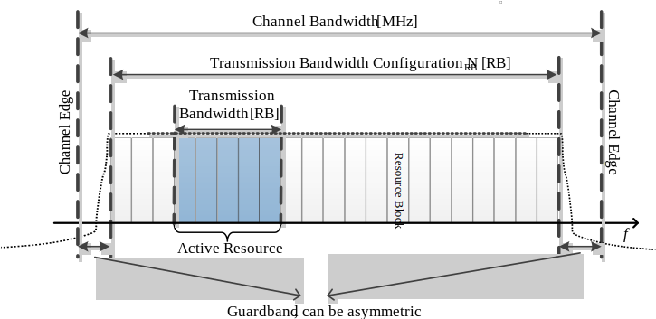

Technical Specification Group Radio Access Network;
NR;
Satellite Access Node radio transmission and reception (Release
17)
The present document has been developed within the 3rd
Generation Partnership Project (3GPP TM) and may be further
elaborated for the purposes of 3GPP.
The present document has not been subject to any approval process by the
3GPP Organizational Partners and shall not be implemented.
This Specification is provided for future development work within 3GPP
only. The Organizational Partners accept no liability for any use of
this Specification.
Specifications and Reports for implementation of the 3GPP TM
system should be obtained via the 3GPP Organizational Partners'
Publications Offices.
3GPP
Postal address
3GPP support office address
650 Route des Lucioles - Sophia Antipolis
Valbonne - FRANCE
Tel.: +33 4 92 94 42 00 Fax: +33 4 93 65 47 16
Internet
http://www.3gpp.org
Copyright
Notification
No part may be reproduced except as authorized by written
permission.
The copyright and the foregoing restriction extend to reproduction in
all media.
UMTS™ is a Trade Mark of ETSI registered for the benefit of its
members
3GPP™ is a Trade Mark of ETSI registered for the benefit of its
Members and of the 3GPP Organizational Partners
LTE™ is a Trade Mark of ETSI registered for the benefit of its Members
and of the 3GPP Organizational Partners
GSM® and the GSM logo are registered and owned by the GSM
Association
This Technical Specification has been produced by the 3rd Generation
Partnership Project (3GPP).
The contents of the present document are subject to continuing work
within the TSG and may change following formal TSG approval. Should the
TSG modify the contents of the present document, it will be re-released
by the TSG with an identifying change of release date and an increase in
version number as follows:
Version x.y.z
where:
x the first digit:
1 presented to TSG for information;
2 presented to TSG for approval;
3 or greater indicates TSG approved document under change
control.
y the second digit is incremented for all changes of substance, i.e.
technical enhancements, corrections, updates, etc.
z the third digit is incremented when editorial only changes have
been incorporated in the document.
In the present document, modal verbs have the following meanings:
shall indicates a mandatory requirement to do
something
shall not indicates an interdiction (prohibition) to
do something
The constructions "shall" and "shall not" are confined to the context
of normative provisions, and do not appear in Technical Reports.
The constructions "must" and "must not" are not used as substitutes
for "shall" and "shall not". Their use is avoided insofar as possible,
and they are not used in a normative context except in a direct citation
from an external, referenced, non-3GPP document, or so as to maintain
continuity of style when extending or modifying the provisions of such a
referenced document.
should indicates a recommendation to do
something
should not indicates a recommendation not to do
something
may indicates permission to do something
need not indicates permission not to do
something
The construction "may not" is ambiguous and is not used in normative
elements. The unambiguous constructions "might not" or "shall not" are
used instead, depending upon the meaning intended.
can indicates that something is possible
cannot indicates that something is impossible
The constructions "can" and "cannot" are not substitutes for "may"
and "need not".
will indicates that something is certain or expected
to happen as a result of action taken by an agency the behaviour of
which is outside the scope of the present document
will not indicates that something is certain or
expected not to happen as a result of action taken by an agency the
behaviour of which is outside the scope of the present document
might indicates a likelihood that something will
happen as a result of action taken by some agency the behaviour of which
is outside the scope of the present document
might not indicates a likelihood that something will
not happen as a result of action taken by some agency the behaviour of
which is outside the scope of the present document
In addition:
is (or any other verb in the indicative mood)
indicates a statement of fact
is not (or any other negative verb in the indicative
mood) indicates a statement of fact
The constructions "is" and "is not" do not indicate requirements.
1 Scope
The present document establishes the minimum RF characteristics and
minimum performance requirements of NR Satellite Access Node (SAN).
2 References
The following documents contain provisions which, through reference
in this text, constitute provisions of the present document.
- References are either specific (identified by date of publication,
edition number, version number, etc.) or non‑specific.
- For a specific reference, subsequent revisions do not apply.
- For a non-specific reference, the latest version applies. In the
case of a reference to a 3GPP document (including a GSM document), a
non-specific reference implicitly refers to the latest version of that
document in the same Release as the present document.
[1] 3GPP TR 21.905: "Vocabulary for 3GPP Specifications".
[2] ITU-R Recommendation SM.329: "Unwanted emissions in the spurious
domain".
[4] ITU-R Recommendation M.1545: "Measurement uncertainty as it
applies to test limits for the terrestrial component of International
Mobile Telecommunications-2000".
[5] 3GPP TS 38.211: "NR; Physical channels and modulation".
[6] 3GPP TS 38.331: "NR; Radio Resource Control (RRC); Protocol
specification".
[7] 3GPP TS 38.213: "NR; Physical layer procedures for control".
[8] ITU-R Recommendation SM.328: "Spectra and bandwidth of
emissions".
[9] ITU-R Recommendation SM.1541-6: "Unwanted emissions in the
out-of-band domain".
[10] 3GPP TS 38.212: "NR; Multiplexing and channel coding".
[11] 3GPP TS 38.101-5: "NR; User Equipment (UE) radio transmission
and reception; Part 5: Satellite access Radio Frequency (RF) and
performance requirements”
[12] 3GPP TR 38.901: "Study on channel model for frequencies from 0.5
to 100 GHz"
[13] 3GPP TR 38.811: "Study on New Radio (NR) to support
non-terrestrial networks"
3 Definitions, symbols
and abbreviations
3.1 Definitions
For the purposes of the present document, the terms given in 3GPP
TR 21.905 [1] and the following apply. A term defined in the present
document takes precedence over the definition of the same term, if any,
in 3GPP TR 21.905 [1].
basic limit: emissions limit relating to the power
supplied by a single transmitter to a single antenna transmission line
in ITU-R SM.329 [2] used for the formulation of unwanted emission
requirements for FR1-NTN.
beam: beam (of the antenna) is the main lobe of the
radiation pattern of an antenna array.
NOTE: For certain antenna array, there may be more than one
beam.
beam centre direction: direction equal to the
geometric centre of the half-power contour of the beam.
beam direction pair: data set consisting of the
beam centre direction and the related beam peak
direction.
beam peak direction: direction where the maximum
EIRP is found.
beamwidth: beam which has a half-power contour that
is essentially elliptical, the half-power beamwidths in the two pattern
cuts that respectively contain the major and minor axis of the
ellipse.
Channel edge: lowest or highest frequency of the NR
carrier, separated by the SAN channel bandwidth.
directional requirement: requirement which is
applied in a specific direction within the OTA coverage range
for the Tx and when the AoA of the incident wave of a received signal is
within the OTA REFSENS RoAoA or the minSENS RoAoA as
appropriate for the receiver.
equivalent isotropic radiated power: equivalent
power radiated from an isotropic directivity device producing the same
field intensity at a point of observation as the field intensity
radiated in the direction of the same point of observation by the
discussed device.
NOTE: Isotropic directivity is equal in all directions (i.e. 0
dBi).
equivalent isotropic sensitivity: sensitivity for an
isotropic directivity device equivalent to the sensitivity of the
discussed device exposed to an incoming wave from a defined AoA.
NOTE 1: The sensitivity is the minimum received power level at which
specific requirement is met.
NOTE 2: Isotropic directivity is equal in all directions (i.e. 0
dBi).
feeder link: Wireless link between satellite-gateway
and satellite.
Geostationary Earth Orbit: Circular orbit at 35,786
km above the Earth's equator and following the direction of the Earth's
rotation. An object in such an orbit has an orbital period equal to the
Earth's rotational period and thus appears motionless, at a fixed
position in the sky, to ground observers.
Low Earth Orbit: Orbit around the Earth with an
altitude between 300 km, and 1500 km.
Highest Carrier: The carrier with the highest
carrier frequency transmitted/received in a specified frequency
band.
Lowest Carrier: The carrier with the lowest carrier
frequency transmitted/received in a specified frequency band.
maximum carrier output power: mean power level
measured per carrier at the indicated interface, during the
transmitter ON period in a specified reference condition.
maximum carrier TRP output power: mean power level
measured per RIB during the transmitter ON period for a
specific carrier in a specified reference condition and corresponding to
the declared rated carrier TRP output power
(Prated,c,TRP).
maximum total output power: mean power level
measured within the operating band at the indicated interface,
during the transmitter ON period in a specified reference
condition.
maximum total TRP output power: mean power level
measured per RIB during the transmitter ON period in a
specified reference condition and corresponding to the declared
rated total TRP output power (Prated,t,TRP).
measurement bandwidth: RF bandwidth in which an
emission level is specified.
minSENS: the lowest declared EIS value for the
OSDD's declared for OTA sensitivity requirement.
minSENS RoAoA: The reference RoAoA
associated with the OSDD with the lowest declared EIS.
minimum elevation angle: Minimum angle under which
the satellite can be seen by a UE.
necessary bandwidth: The width of the frequency band
which is just sufficient to ensure the transmission of information at
the rate and with the quality required under specified conditions.
non-terrestrial networks: Networks, or segments of
networks, using an airborne or space-borne vehicle to embark a
transmission equipment relay node or SAN.
operating band: frequency range in which NR operates
(paired or unpaired), that is defined with a specific set of technical
requirements.
NOTE: The operating band(s) for a SAN is declared by the
manufacturer according to the designations in tables 5.2-1 and
5.2-2.
OTA coverage range: a common range of directions
within which TX OTA requirements that are neither specified in the
OTA peak directions sets nor as TRP requirement are
intended to be met.
OTA peak directions set: set(s) of beam peak
directions within which certain TX OTA requirements are intended to
be met, where all OTA peak directions set(s) are subsets of
the OTA coverage range.
NOTE: The beam peak directions are related to a
corresponding contiguous range or discrete list of beam centre
directions by the beam direction pairs included in the
set.
OTA REFSENS RoAoA: the RoAoA determined by the
contour defined by the points at which the achieved EIS is 3dB higher
than the achieved EIS in the reference direction assuming that for any
AoA, the receiver gain is optimized for that AoA.
NOTE: This contour will be related to the average element/sub-array
radiation pattern 3dB beamwidth.
OTA sensitivity directions declaration: set of
manufacturer declarations comprising at least one set of declared
minimum EIS values (with SAN channel bandwidth), and related
directions over which the EIS applies.
NOTE: All the directions apply to all the EIS values in an OSDD.
polarization match: condition that exists when a
plane wave, incident upon an antenna from a given direction, has a
polarization that is the same as the receiving polarization of the
antenna in that direction.
radiated interface boundary: operating band
specific radiated requirements reference where the radiated requirements
apply.
NOTE: For requirements based on EIRP/EIS, the radiated interface
boundary is associated to the far-field region.
Radio Bandwidth: frequency difference between the
upper edge of the highest used carrier and the lower edge of the lowest
used carrier.
rated beam EIRP: For a declared beam and beam
direction pair, the rated beam EIRP level is the maximum
power that the SAN is declared to radiate at the associated beam
peak direction during the transmitter ON period.
rated carrier output power: mean power level
associated with a particular carrier the manufacturer has declared to be
available at the indicated interface, during the transmitter ON
period in a specified reference condition.
rated carrier TRP output power: mean power level
declared by the manufacturer per carrier, for SAN operating in single
carrier, multi-carrier, or carrier aggregation configurations that the
manufacturer has declared to be available at the RIB during the
transmitter ON period.
rated total output power: mean power level
associated with a particular operating band the manufacturer
has declared to be available at the indicated interface, during the
transmitter ON period in a specified reference condition.
rated total TRP output power: mean power level
declared by the manufacturer, that the manufacturer has declared to be
available at the RIB during the transmitter ON period.
reference beam direction pair: declared beam
direction pair, including reference beam centre direction
and reference beam peak direction where the reference beam
peak direction is the direction for the intended maximum EIRP
within the OTA peak directions set.
receiver target: AoA in which reception is performed
by SAN types 1-H or SAN type 1-O.
receiver target redirection range: union of all the
sensitivity RoAoA achievable through redirecting the
receiver target related to particular OSDD.
receiver target reference direction: direction
inside the OTA sensitivity directions declaration declared by
the manufacturer for conformance testing. For an OSDD without
receiver target redirection range, this is a direction inside
the sensitivity RoAoA.
reference RoAoA: the sensitivity RoAoA
associated with the receiver target reference direction for
each OSDD.
requirement set: one of the NR SAN requirement's set
as defined for SAN type 1-H, SAN type 1-O.
SAN channel bandwidth: RF bandwidth supporting a
single NR RF carrier with the transmission bandwidth configured
in the uplink or downlink.
NOTE 1: The SAN channel bandwidth is measured in MHz and is
used as a reference for transmitter and receiver RF requirements.
NOTE 2: It is possible for the SAN to transmit to and/or receive from
one or more satellite UE bandwidth parts that are smaller than or equal
to the SAN transmission bandwidth configuration, in any part of
the SAN transmission bandwidth configuration.
SAN RF Bandwidth: RF bandwidth in which a SAN
transmits and/or receives single or multiple carrier(s) within a
supported operating band.
NOTE: In single carrier operation, the SAN RF Bandwidth is
equal to the SAN channel bandwidth.
SAN RF Bandwidth edge: frequency of one of the edges
of the SAN RF Bandwidth.
SAN transmission bandwidth configuration: set of
resource blocks located within the SAN channel bandwidth which
may be used for transmitting or receiving by the SAN.
SAN type 1-H: Satellite Access Node operating at
FR1-NTN with a requirement set consisting of conducted requirements
defined at individual TAB connectors and OTA requirements
defined at RIB.
SAN type 1-O: Satellite Access Node operating at
FR1-NTN with a requirement set consisting only of OTA requirements
defined at the RIB.
SAN total assigned bandwidth: Bandwidth of the total
assigned band (frequencies range) as defined in SM.1541-6 [9].
SAN transponder bandwidth: Total bandwidth of the
carrier(s) in operation by one SAN transponder.
NOTE: When the SAN transponder operates one carrier only, the SAN
transponder bandwidth is equal to the SAN channel bandwidth of this
carrier.
SAN transponder: part of the SAN permitting to
receive, channelize and transmit signals within an allocated
bandwidth.
satellite: A space-borne vehicle embarking a
transparent payload, or a regenerative payload telecommunication
transmitter, placed into Low-Earth Orbit (LEO) or Geostationary Earth
Orbit (GEO).
Satellite Access Node: node providing NR user plane
and control plane protocol terminations towards NTN satellite capable
UE, and connected via the NG interface to the 5GC. It encompasses a
transparent payload on board a NTN platform, with satellite-gateway and
gNB functions.
satellite-gateway: An earth station or gateway is
located at the surface of Earth, and providing sufficient RF power and
RF sensitivity for accessing to the satellite.
sensitivity RoAoA: RoAoA within the OTA
sensitivity directions declaration, within which the declared
EIS(s) of an OSDD is intended to be achieved at any instance of time for
a specific SAN direction setting.
total radiated power: is the total power radiated by
the antenna.
NOTE: The total radiated power is the power radiating in all
direction for two orthogonal polarizations. Total radiated
power is defined in both the near-field region and the far-field
region.
transceiver array boundary: conducted interface
between the transceiver unit array and the composite antenna.
transmission bandwidth: RF Bandwidth of an
instantaneous transmission from a satellite UE or SAN, measured in
resource block units.
3.2 Symbols
For the purposes of the present document, the following symbols
apply:
β Percentage of the mean transmitted power emitted outside the
occupied bandwidth on the assigned channel.
BeWθ,REFSENS Beamwidth equivalent to the OTA REFSENS
RoAoA in the θ-axis in degrees. Applicable for FR1-NTN only.
BeWφ,REFSENS Beamwidth equivalent to the OTA REFSENS
RoAoA in the φ-axis in degrees. Applicable for FR1-NTN only.
BWChannelSAN channel bandwidth.
BWConfigTransmission bandwidth configuration,
where BWConfig = NRB x SCS x 12.
BWGB,low The minimum guard band defined in clause 5.3.3
for lowest assigned component carrier.
BWGB,high The minimum guard band defined in clause 5.3.3
for highest assigned component carrier.
BWSAN The SAN transponder bandwidth
∆f Separation between the channel edge frequency and the
nominal -3 dB point of the measuring filter closest to the carrier
frequency.
ΔFGlobal Global frequency raster granularity.
∆fmax f_offsetmax minus half of the bandwidth
of the measuring filter.
ΔfOOB Maximum offset of the out-of-band boundary from the
uplink operating band edge.
ΔminSENS Difference between conducted reference
sensitivity and minSENS.
ΔOTAREFSENS Difference between conducted reference
sensitivity and OTA REFSENS.
ΔFRaster Channel raster granularity.
EISminSENS The EIS declared for the minSENS
RoAoA.
EISREFSENS OTA REFSENS EIS value.
FCRF reference frequency on the channel raster,
given in table 5.4.2.2-1.
FC,low The Fc of the lowest carrier, expressed in
MHz.
FC,high The Fc of the highest carrier, expressed
in MHz.
FDL,low The lowest frequency of the downlink operating
band.
FDL,high The highest frequency of the downlink
operating band.
Ffilter Filter centre frequency.
Foffset,high Frequency offset from FC,high to
the upper SAN RF Bandwidth edge.
Foffset,low Frequency offset from FC,low to the
lower SAN RF Bandwidth edge.
f_offset Separation between the channel edge frequency and
the centre of the measuring.
f_offsetmax The offset to the frequency ΔfOBUE
outside the downlink operating band.
FREF RF reference frequency.
FREF-Offs Offset used for calculating FREF.
FUL,low The lowest frequency of the uplink operating
band.
FUL,high The highest frequency of the uplink operating
band.
Physical resource block number.
NRBTransmission bandwidth configuration,
expressed in resource blocks.
NREF NR Absolute Radio Frequency Channel Number
(NR-ARFCN).
NREF-Offs Offset used for calculating NREF
scaling per cell, as calculated in clause 6.1.
PEIRP,N EIRP level for channel N.
Pmax,c,TABC The maximum carrier output power per TAB
connector.
Pmax,c,TRPMaximum carrier TRP output
power measured at the RIB(s), and corresponding to the declared
rated carrier TRP output power (Prated,c,TRP).
Pmax,c,EIRP The maximum carrier EIRP when the SAN is
configured at the maximum rated carrier output TRP
(Prated,c,TRP).
Prated,c,sys Prated,c,sys,GEO for SAN GEO class
or Prated,c,sys,LEO for SAN LEO class.
Prated,c,sys,GEO The sum of Prated,c,TABC for
all TAB connectors for a single carrier of the SAN GEO
class.
Prated,c,sys,LEO The sum of Prated,c,TABC for
all TAB connectors for a single carrier of the SAN LEO
class.
Prated,c,TABC Prated,c,TABC,GEO for SAN GEO
class or Prated,c,TABC,LEO for SAN LEO class.
Prated,c,TABC,GEO The rated carrier output power per
TAB connector of the SAN GEO class.
Prated,c,TABC,LEO The rated carrier output power per
TAB connector of the SAN LEO class.
Prated,c,TRPRated carrier TRP output power
declared per RIB.
Prated,t,TABC The rated total output power
declared at TAB connector.
Prated,t,TRPRated total TRP output power
declared per RIB.
Prated,t,sys The sum of Prated,t,TABC for
all TAB connectors.
PREFSENS Conducted Reference Sensitivity power level.
SSREF SS block reference frequency position.
3.3 Abbreviations
For the purposes of the present document, the abbreviations given in
3GPP TR 21.905 [1] and the following apply. An abbreviation defined in
the present document takes precedence over the definition of the same
abbreviation, if any, in 3GPP TR 21.905 [1].
AA Antenna Array
ACLR Adjacent Channel Leakage Ratio
ACS Adjacent Channel Selectivity
AoA Angle of Arrival
AWGN Additive White Gaussian Noise
BW Bandwidth
CA Carrier Aggregation
CP-OFDM Cyclic Prefix-OFDM
CW Continuous Wave
DFT-s-OFDM Discrete Fourier Transform-spread-OFDM
DM-RS Demodulation Reference Signal
EIRP Equivalent Isotropic Radiated Power
EIS Equivalent Isotropic Sensitivity
EVM Error Vector Magnitude
FR Frequency Range
FRC Fixed Reference Channel
GEO Geostationary Earth Orbiting
GSCN Global Synchronization Channel Number
ICS In-Channel Selectivity
LEO Low Earth Orbiting
MCS Modulation and Coding Scheme
NR New Radio
NR-ARFCN NR Absolute Radio Frequency Channel Number
NTN Non-Terrestrial Network
OOB Out-of-band
OOBE Out-of-band Emissions
OSDD OTA Sensitivity Directions Declaration
OTA Over-The-Air
PRB Physical Resource Block
PT-RS Phase Tracking Reference Signal
QAM Quadrature Amplitude Modulation
RB Resource Block
RDN Radio Distribution Network
RE Resource Element
REFSENS Reference Sensitivity
RF Radio Frequency
RIB Radiated Interface Boundary
RMS Root Mean Square (value)
RoAoA Range of Angles of Arrival
RX Receiver
SAN Satellite Access Node
SCS Sub-Carrier Spacing
SSB Synchronization Signal Block
TAB Transceiver Array Boundary
TRP Total Radiated Power
TX Transmitter
4 General
4.1 Relationship
with other core specifications
The present document is a single-RAT specification for a SAN,
covering RF characteristics and minimum performance requirements.
Conducted and radiated core requirements are defined for the SAN
architectures and SAN types defined in clause 4.3.
The applicability of each requirement is described in clause 4.6.
4.2
Relationship between minimum requirements and test requirements
Conformance to the present specification is demonstrated by
fulfilling the test requirements specified in the conformance
specification TS 38.181 [3].
The minimum requirements given in this specification make no
allowance for measurement uncertainty. The test specifications TS 38.181
[3] define test tolerances. These test tolerances are individually
calculated for each test. The test tolerances are used to relax the
minimum requirements in this specification to create test requirements.
For some requirements, including regulatory requirements, the test
tolerance is set to zero.
The measurement results returned by the test system are compared -
without any modification - against the test requirements as defined by
the shared risk principle.
The shared risk principle is defined in recommendation ITU‑R M.1545
[4].
4.3 Requirement reference
points
4.3.1 SAN type 1-H
For SAN type 1-H, the requirements are defined for two
points of reference, signified by radiated requirements and conducted
requirements.
Figure 4.3.1-1: Radiated and conducted reference points for SAN
type 1-H
Radiated characteristics are defined over the air (OTA), where the
radiated interface is referred to as the Radiated Interface
Boundary (RIB). Radiated requirements are also referred to as OTA
requirements. The (spatial) characteristics in which the OTA
requirements apply are detailed for each requirement.
Conducted characteristics are defined at individual or groups of
TAB connectors at the transceiver array boundary,
which is the conducted interface between the transceiver unit array and
the composite antenna.
The transceiver unit array is part of the composite transceiver
functionality receiving and transmitting modulated signal to ensure
radio links with users.
The satellite payload is composed by a transceiver unit array and a
composite antenna array. The transceiver unit array contains an
implementation specific number of transmitter units and an
implementation specific number of receiver units.
The composite antenna contains a radio distribution network (RDN) and
an antenna array. The RDN is a linear passive network which distributes
the RF power generated by the transceiver unit array to the antenna
array, and/or distributes the radio signals collected by the antenna
array to the transceiver unit array, in an implementation specific
way.
How a conducted requirement is applied to the transceiver array
boundary is detailed in the respective requirement clause.
4.3.2 SAN type 1-O
For SAN type 1-O, the radiated characteristics are defined
over the air (OTA), where the operating band specific radiated
interface is referred to as the Radiated Interface Boundary
(RIB). Radiated requirements are also referred to as OTA requirements.
The (spatial) characteristics in which the OTA requirements apply are
detailed for each requirement.
Figure 4.3.2-1: Radiated reference points for SAN type
1-O
4.4 Satellite Access Node
classes
The requirements in this specification apply to Satellite Access Node
unless otherwise stated. The associated deployment scenarios are exactly
the same for SAN with and without connectors.
For SAN type 1-O and SAN type 1-H, two SAN classes
(LEO and GEO) are defined in Table 4.4-1.
Table 4.4-1 SAN classes
SAN Class
Satellite constellation
GEO
GEO satellite
LEO
LEO 600 km satellite
LEO 1200 km satellite
4.5 Regional requirements
Some requirements in the present document may only apply in certain
regions either as optional requirements, or as mandatory requirements
set by local and regional regulation. It is normally not stated in the
3GPP specifications under what exact circumstances the regional
requirements apply, since this is defined by local or regional
regulation.
Table 4.5-1 lists all requirements in the present specification that
may be applied differently in different regions.
Table 4.5-1: List of regional requirements
Clause number
Requirement
Comments
5.2
Operating bands
Satellite operating bands may be applied regionally.
6.6.4,
9.7
Out-of-band emission,
OTA unwanted emissions
For n255 operation in US, Limits in FCC Title 47 apply.
6.6.5
Tx spurious emissions,
OTA Tx spurious emissions
For n255 operation in US, Limits in FCC Title 47 apply.
4.6 Applicability of
minimum requirements
In table 4.6-1, the requirement applicability for each
requirement set is defined. For each requirement, the
applicable requirement clause in the specification is identified.
Requirements not included in a requirement set is marked not
applicable (NA).
Table 4.6-1: Requirement set applicability
Requirement
Requirement set
SAN type 1-H
SAN type 1-O
Satellite Access Network output power
6.2
Output power dynamics
6.3
Transmit ON/OFF power
NA
Frequency error
6.5.1
Modulation quality
6.5.2
Time alignment error
NA
Occupied bandwidth
6.6.2
ACLR
6.6.3
Out-of-band emissions
6.6.4
Transmitter spurious emissions
6.6.5
Transmitter intermodulation
NA
NA
Reference sensitivity level
7.2
Dynamic range
7.3
ACS
7.4.1
In-band blocking
NA
Out-of-band blocking
7.5
Receiver spurious emissions
NA
Receiver intermodulation
NA
In-channel selectivity
7.8
Performance requirements
8
Radiated transmit power
9.2
9.2
OTA Satellite Access Network output power
9.3
OTA output power dynamics
9.4
OTA transmit ON/OFF power
NA
OTA frequency error
9.6.1
OTA modulation quality
9.6.2
OTA time alignment error
NA
OTA occupied bandwidth
9.7.2
OTA ACLR
NA
9.7.3
OTA out-of-band emission
9.7.4
OTA transmitter spurious emission
9.7.5
OTA transmitter intermodulation
NA
OTA sensitivity
10.2
10.2
OTA reference sensitivity level
10.3
OTA dynamic range
10.4
OTA ACS
10.5.1
OTA in-band blocking
NA
OTA out-of-band blocking
NA
10.6
OTA receiver spurious emission
NA
OTA receiver intermodulation
NA
OTA in-channel selectivity
10.9
Radiated performance requirements
11
NOTE: Co-location requirements are not applicable to SAN.
5 Operating bands and
channel arrangement
5.1 General
The channel arrangements presented in this clause are based on the
operating bands and SAN channel bandwidths defined in
the present release of specifications.
NOTE: Other operating bands and SAN channel
bandwidths may be considered in future releases.
Requirements throughout the RF specifications are in many cases
defined separately for different frequency ranges (FR). The frequency
ranges in which satellite can operate according to the present version
of the specification are identified as described in table 5.1-1.
Table 5.1-1: Definition of NTN frequency ranges
Frequency range designation
Corresponding frequency range (MHz)
FR1-NTN (NOTE)
410 – 7125
NOTE: NTN bands within this frequency range are regarded
as a FR1 band when references from other specifications.
5.2 Operating bands
Satellite is designed to operate in the operating bands
defined in table 5.2-1.
Table 5.2-1: Satellite operating bands in FR1-NTN
Satellite operating band
Uplink (UL) operating band
SAN receive / UE transmit
FUL,low – FUL,high
Downlink (DL) operating band
SAN transmit / UE receive
FDL,low – FDL,high
Duplex mode
n256
1980 MHz – 2010 MHz
2170 MHz – 2200 MHz
FDD
n255
1626.5 MHz – 1660.5 MHz
1525 MHz – 1559 MHz
FDD
NOTE: Satellite bands are numbered in descending order
from n256.
5.3 Satellite Access
Node channel bandwidth
5.3.1 General
The SAN channel bandwidth supports a single RF carrier in
the uplink or downlink at the SAN. Different UE channel bandwidths may
be supported within the same spectrum for transmitting to and receiving
from UEs connected to the SAN. The placement of the UE channel bandwidth
is flexible but can only be completely within the SAN channel
bandwidth. The SAN shall be able to transmit to and/or receive from
one or more UE bandwidth parts that are smaller than or equal to the
number of carrier resource blocks on the RF carrier, in any part of the
carrier resource blocks.
The relationship between the channel bandwidth, the guard band and
the transmission bandwidth configuration is shown in figure
5.3.1-1.
.
Figure 5.3.1-1: Definition of channel bandwidth and transmission
bandwidth configuration for one channel
5.3.2 Transmission
bandwidth configuration
The transmission bandwidth configuration NRB for
each SAN channel bandwidth and subcarrier spacing is specified
in table 5.3.2.-1 for FR1-NTN.
Table 5.3.2-1: Transmission bandwidth configuration NRB
for FR1-NTN
SCS (kHz)
5 MHz
10 MHz
15 MHz
20 MHz
NRB
NRB
NRB
NRB
15
25
52
79
106
30
11
24
38
51
60
N/A
11
18
24
NOTE: All Tx and Rx requirements are defined based on
transmission bandwidth configuration specified in table 5.3.2-1
for FR1-NTN.
5.3.3
Minimum guardband and transmission bandwidth configuration
The minimum guard band for each SAN channel bandwidth and
SCS is specified in table 5.3.3-1 for FR1-NTN.
Table 5.3.3-1: Minimum guard band (kHz) (FR1-NTN)
SCS (kHz)
5 MHz
10 MHz
15 MHz
20 MHz
15
242.5
312.5
382.5
452.5
30
505
665
645
805
60
N/A
1010
990
1330
The number of RBs configured in any SAN channel bandwidth
shall ensure that the minimum guard band specified in this clause is
met.
Figure 5.3.3-1: SAN PRB utilization
In the case that multiple numerologies are multiplexed in the same
symbol, the minimum guard band on each side of the carrier is the guard
band applied at the configured SAN channel bandwidth for the
numerology that is transmitted/received immediately adjacent to the
guard band.
Figure 5.3.3-2: Guard band definition when transmitting multiple
numerologies
NOTE: Figure 5.3.3-2 is not intended to imply the size of any guard
between the two numerologies. Inter-numerology guard band within the
carrier is implementation dependent.
5.3.4 RB alignment
For each SAN channel bandwidth and each numerology, SAN
transmission bandwidth configuration must fulfil the minimum guard
band requirement specified in clause 5.3.3.
For each numerology, its common resource blocks are specified in
clause 4.4.4.3 in TS 38.211 [5], and the starting point of its
transmission bandwidth configuration on the common resource
block grid for a given channel bandwidth is indicated by an offset to
“Reference point A” in the unit of the numerology.
For each numerology, all UE transmission bandwidth
configurations indicated to UEs served by the SAN by higher layer
parameter carrierBandwidth defined in TS 38.331 [6] shall fall
within the SAN transmission bandwidth configuration.
5.3.5 SAN channel
bandwidth per operating band
The requirements in this specification apply to the combination of
SAN channel bandwidths, SCS and operating bands shown
in table 5.3.5-1 for FR1-NTN. The transmission bandwidth
configuration in table 5.3.2-1 shall be supported for each of the
SAN channel bandwidths within the SAN capability. The SAN
channel bandwidths are specified for both the Tx and Rx path.
Table 5.3.5-1: SAN channel bandwidths and SCS per
operating band in FR1-NTN
SAN Operating Band
SCS (kHz)
SAN channel bandwidth (MHz)
5
10
15
20
15
5
10
15
20
n256
30
10
15
20
60
10
15
20
15
5
10
15
20
n255
30
10
15
20
60
10
15
20
5.4 Channel arrangement
5.4.1 Channel spacing
5.4.1.1 Channel spacing
for adjacent carriers
The spacing between carriers will depend on the deployment scenario,
the size of the frequency block available and the SAN channel
bandwidths. The nominal channel spacing between two adjacent SAN
carriers is defined as following:
- For SAN FR1-NTN operating bands with 100 kHz channel
raster,
where BWChannel(1) and BWChannel(2) are the
SAN channel bandwidths of the two respective SAN carriers. The
channel spacing can be adjusted depending on the channel raster to
optimize performance in a particular deployment scenario.
5.4.2 Channel raster
5.4.2.1 NR-ARFCN and channel
raster
The global frequency raster defines a set of RF reference
frequencies FREF. The RF reference frequency is
used in signalling to identify the position of RF channels, SS blocks
and other elements. The global frequency raster is defined for all
frequencies from 0 to 100 GHz. The granularity of the global frequency
raster is ΔFGlobal.
RF reference frequencies are designated by an NR Absolute
Radio Frequency Channel Number (NR-ARFCN) in the range [0…3279165] on
the global frequency raster. The relation between the NR-ARFCN and the
RF reference frequency FREF in MHz is given by the
following equation, where FREF-Offs and NRef-Offs
are given in table 5.4.2.1-1 and NREF is the NR-ARFCN.
FREF = FREF-Offs + ΔFGlobal
(NREF – NREF-Offs)
Table 5.4.2.1-1: NR-ARFCN parameters for the global frequency
raster
Range of frequencies (MHz)
ΔFGlobal (kHz)
FREF-Offs (MHz)
NREF-Offs
Range of NREF
0 – 3000
5
0
0
0 – 599999
The channel raster defines a subset of RF reference
frequencies that can be used to identify the RF channel position in
the uplink and downlink. The RF reference frequency for an RF
channel maps to a resource element on the carrier. For each
operating band, a subset of frequencies from the global
frequency raster are applicable for that band and forms a channel raster
with a granularity ΔFRaster, which may be equal to or larger
than ΔFGlobal.
For the uplink of FDD FR1 NTN bands defined in Table 5.2-1
where Δshift is signalled by the network in higher layer
parameter frequencyShift7p5khz [7].
The mapping between the channel raster and corresponding
resource element is given in clause 5.4.2.2. The applicable entries for
each operating band are defined in clause 5.4.2.3.
5.4.2.2 Channel
raster to resource element mapping
The mapping between the RF reference frequency on the
channel raster and the corresponding resource element is given in table
5.4.2.2-1 and can be used to identify the RF channel position. The
mapping depends on the total number of RBs that are allocated in the
channel and applies to both UL and DL. The mapping must apply to at
least one numerology supported by the SAN.
Table 5.4.2.2-1: Channel Raster to Resource Element Mapping
\[N_{\text{RB}}{mod}2 = 0\]
\[N_{\text{RB}}{mod}2 = 1\]
Resource element index
0
6
Physical resource block index
NRB is the transmission bandwidth configuration
specified in sub-clause 5.3.2, is the PRB index within the
NRB, and is the
resource element index within this PRB.
5.4.2.3 Channel
raster entries for each operating band
The RF channel positions on the channel raster in each SAN
operating band are given through the applicable NR-ARFCN in
table 5.4.2.3-1 for FR1-NTN, using the channel raster to resource
element mapping in clause 5.4.2.2.
For SAN operating bands with 100 kHz channel raster,
ΔFRaster = 20 × ΔFGlobal. In this case, every
20th NR-ARFCN within the operating band are
applicable for the channel raster within the operating band and
the step size for the channel raster in table 5.4.2.3-1 is given as
<20>.
Table 5.4.2.3-1: Applicable NR-ARFCN per operating band in
FR1-NTN
SAN operating band
ΔFRaster
(kHz)
Uplink
range of NREF
(First – <Step size> – Last)
Downlink
range of NREF
(First – <Step size> – Last)
n256
100
396000 – <20> – 402000
434000 – <20> – 440000
n255
100
325300 – <20> – 332100
305000 – <20> – 311800
5.4.3 Synchronization raster
5.4.3.1 Synchronization
raster and numbering
The synchronization raster indicates the frequency positions of the
synchronization block that can be used by the UE for system acquisition
when explicit signalling of the synchronization block position is not
present.
A global synchronization raster is defined for all frequencies. The
frequency position of the SS block is defined as SSREF with
corresponding number GSCN. The parameters defining the SSREF
and GSCN for all the frequency ranges are in table 5.4.3.1-1.
The resource element corresponding to the SS block reference
frequency SSREF is given in clause 5.4.3.2. The
synchronization raster and the subcarrier spacing of the synchronization
block are defined separately for each band.
Table 5.4.3.1-1: GSCN parameters for the global frequency raster
Range of frequencies (MHz)
SS block frequency position SSREF
GSCN
Range of GSCN
0 – 3000
N * 1200 kHz + M * 50 kHz,
N = 1:2499, M ϵ {1,3,5} (Note)
3N + (M-3)/2
2 – 7498
NOTE: The default value for operating bands
which only support SCS spaced channel raster(s) is M=3.
5.4.3.2
Synchronization raster to synchronization block resource element
mapping
The mapping between the synchronization raster and the corresponding
resource element of the SS block is given in table 5.4.3.2-1.
Table 5.4.3.2-1: Synchronization Raster to SS block Resource Element
Mapping
Resource element index k
120
k is the subcarrier number of SS/PBCH block defined in TS
38.211 clause 7.4.3.1 [5].
5.4.3.3
Synchronization raster entries for each operating band
The synchronization raster for each band is given in table 5.4.3.3-1.
The distance between applicable GSCN entries is given by the <Step
size> indicated in table 5.4.3.3-1 for FR1-NTN.
Table 5.4.3.3-1: Applicable SS raster entries per operating
band (FR1-NTN)
SAN operating band
SS Block SCS
SS Block pattern
(NOTE)
Range of GSCN
(First – <Step size> – Last)
n256
15 kHz
Case A
5429 – <1> – 5494
n255
15 kHz
Case A
3818 – <1> – 3892
30 kHz
Case B
3824 – <1> – 3886
NOTE: SS Block pattern is defined in clause 4.1 in TS
38.213 [7].
6 Conducted transmitter
characteristics
6.1 General
Unless otherwise stated, the conducted transmitter characteristics
are specified at the TAB connector for SAN type 1-H,
with a full complement of transceiver units for the configuration in
normal operating conditions.
6.2 Satellite Access Node
output power
6.2.1 General
The SAN conducted output power requirement applies at TAB
connector for SAN type 1-H.
The rated carrier output power of the SAN type 1-H
shall be as specified in table 6.2.1-2.
Table 6.2.1-2: SAN type 1-H rated output power
limits for SAN classes
SAN class
Prated,c,sys (NOTE)
Prated,c,TABC (NOTE)
SAN GEO class
Prated,c,sys,GEO
Prated,c,TABC,GEO
SAN LEO class
Prated,c,sys,LEO
Prated,c,TABC,LEO
NOTE: Prated,c,sys or
Prated,c,TABC of SAN shall be based on manufacturer
declaration and comply with regulation requirement.
6.2.2 Minimum requirement
for SAN type 1-H
In normal conditions, Pmax,c,TABC shall remain within +2
dB and -2 dB of the rated carrier output power
Prated,c,TABC for each TAB connector as declared by
the manufacturer.
6.3 Output power dynamics
6.3.1 General
Transmitted signal quality (as specified in clause 6.5) shall be
maintained for the output power dynamics requirements of this
clause.
Power control is used to limit the interference level.
6.3.2 RE power control dynamic
range
6.3.2.1 General
The RE power control dynamic range is the difference between the
power of an RE and the average RE power for a SAN at maximum output
power (Pmax,c,TABC) for a specified reference condition.
For SAN type 1-H this requirement shall apply at each
TAB connector supporting transmission in the operating
band.
6.3.2.2 Minimum
requirement for SAN type 1-H
RE power control dynamic range requirement is specified in table
6.3.2.2-1.
Table 6.3.2.2-1: RE power control dynamic range
Modulation scheme used
RE power control dynamic range (dB)
on the RE
(down)
(up)
QPSK (PDCCH)
-6
+4
QPSK (PDSCH)
-6
+3
16QAM (PDSCH)
-3
+3
64QAM (PDSCH) (NOTE 2)
0
0
NOTE 1: The output power per carrier shall always be
less or equal to the maximum output power of the satellite access
node.
NOTE 2: This requirement is optional, subject to manufacturer
declaration.
6.3.3 Total power dynamic range
6.3.3.1 General
The SAN total power dynamic range is the difference between the
maximum and the minimum transmit power of an OFDM symbol for a specified
reference condition.
For SAN type 1-H this requirement shall apply at each
TAB connector supporting transmission in the operating
band.
NOTE 1: The upper limit of the dynamic range is the OFDM symbol power
for a SAN when transmitting on all RBs at maximum output power. The
lower limit of the total power dynamic range is the average power for
single RB transmission. The OFDM symbol shall carry PDSCH and not
contain RS or SSB.
6.3.3.2 Minimum
requirement for SAN type 1-H
The downlink (DL) total power dynamic range for each SAN carrier
shall be larger than or equal to the level in table 6.3.3.2-1.
Table 6.3.3.2-1: Total power dynamic range
SAN channel
Total power dynamic range (dB)
bandwidth (MHz)
15 kHz SCS
30 kHz SCS
60 kHz SCS
5
13.9
10.4
N/A
10
17.1
13.8
10.4
15
18.9
15.7
12.5
20
20.2
17
13.8
6.4 Transmit ON/OFF power
The requirement is not applicable in this version of the
specification.
6.5 Transmitted signal quality
6.5.1 Frequency error
6.5.1.1 General
Frequency error is the measure of the difference between the actual
SAN transmit frequency and the assigned frequency. The same source shall
be used for RF frequency and data clock generation.
For SAN type 1-H this requirement shall be applied at each
TAB connector supporting transmission in the operating
band.
6.5.1.2 Minimum
requirement for SAN type 1-H
The modulated carrier frequency of each carrier configured by the SAN
shall be accurate to within 0.05 ppm observed over 1 ms.
6.5.2 Modulation quality
6.5.2.1 General
Modulation quality is defined by the difference between the measured
carrier signal and an ideal signal. Modulation quality can e.g. be
expressed as Error Vector Magnitude (EVM). The Error Vector Magnitude is
a measure of the difference between the ideal symbols and the measured
symbols after the equalization. This difference is called the error
vector. Details about how the EVM is determined are specified in Annex
B.
For SAN type 1-H this requirement shall be applied at each
TAB connector supporting transmission in the operating
band.
6.5.2.2 Minimum
Requirement for SAN type 1-H
The EVM levels of each carrier for different modulation schemes on
PDSCH outlined in table 6.5.2.2-1 shall be met using the frame structure
described in clause 6.5.2.3.
Table 6.5.2.2-1: EVM requirements for SAN type 1-H
carrier
Modulation scheme for PDSCH
Required EVM
QPSK
17.5 %
16QAM
12.5 %
64QAM (NOTE)
8 %
NOTE: EVM requirement for 64QAM is optional, subject to
manufacturer declaration.
6.5.2.3 EVM frame structure
for measurement
EVM shall be evaluated for each carrier over all allocated resource
blocks and downlink subframes. Different modulation schemes listed in
table 6.5.2.2-1 shall be considered for rank 1.
For all bandwidths, the EVM measurement shall be performed for each
carrier over all allocated resource blocks and downlink subframes within
10 ms measurement periods. The boundaries of the EVM measurement periods
need not be aligned with radio frame boundaries.
6.5.3 Time alignment error
The requirement is not applicable in this version of the
specification.
6.6 Unwanted emissions
6.6.1 General
Unwanted emissions consist of out-of-band emissions and spurious
emissions according to ITU definitions [2]. In ITU terminology, out of
band emissions are unwanted emissions immediately outside the SAN
channel bandwidth resulting from the modulation process and
non-linearity in the transmitter but excluding spurious emissions.
Spurious emissions are emissions which are caused by unwanted
transmitter effects such as harmonics emission, parasitic emission,
intermodulation products and frequency conversion products, but exclude
out of band emissions.
The out-of-band emissions requirement for the SAN transmitter is
specified both in terms of Adjacent Channel Leakage power Ratio (ACLR)
and out-of-band emissions (OOBE). There is in addition a requirement for
occupied bandwidth.
Table 6.6.1-1: void
For SAN type 1-H the unwanted emission requirements are
applied to sum of power over all TAB connectors for all the
configurations supported by the SAN, except for occupied bandwidth in
subclause 6.6.2.
6.6.2 Occupied bandwidth
6.6.2.1 General
The occupied bandwidth is the width of a frequency band such that,
below the lower and above the upper frequency limits, the mean powers
emitted are each equal to a specified percentage β/2 of the total mean
transmitted power. See also Recommendation ITU-R SM.328 [8].
The value of β/2 shall be taken as 0.5%.
The minimum requirement below may be applied regionally. There may
also be regional requirements to declare the occupied bandwidth
according to the definition in the present clause.
For SAN type 1-H this requirement shall be applied at each
TAB connector supporting transmission in the operating
band.
6.6.2.2 Minimum
requirement for SAN type 1-H
The occupied bandwidth for each carrier shall be less than the
SAN channel bandwidth.
6.6.3 Adjacent Channel
Leakage Power Ratio
6.6.3.1 General
Adjacent Channel Leakage power Ratio (ACLR) is the ratio of the
filtered mean power centred on the assigned channel frequency to the
filtered mean power centred on an adjacent channel frequency.
The requirements shall apply outside the SAN RF Bandwidth or
Radio Bandwidth whatever the type of transmitter considered
(single carrier or multi-carrier) and for all transmission modes
foreseen by the manufacturer’s specification.
6.6.3.2 Minimum
requirement for SAN type 1-H
The ACLR is defined with a square filter of bandwidth equal to the
transmission bandwidth configuration of the transmitted signal
(BWConfig) centred on the assigned channel frequency and a
filter centred on the adjacent channel frequency according to the tables
below.
The ACLR shall be higher than the value specified in Table
6.6.3.2-1/2.
Table 6.6.3.2-1: SAN ACLR limit for GEO class
SAN channel bandwidth of lowest/highest carrier transmitted
BWChannel (MHz)
SAN adjacent channel centre frequency offset below the lowest or
above the highest carrier centre frequency transmitted
Assumed adjacent channel carrier (informative)
Filter on the adjacent channel frequency and corresponding filter
bandwidth
ACLR limit
(dB)
5, 10, 15, 20
BWChannel
NR of same BW (NOTE 2)
Square (BWConfig) (NOTE 1)
14
2 x BWChannel
NR of same BW (NOTE 2)
Square (BWConfig) (NOTE 1)
14
NOTE 1: BWChannel and BWConfig
are the SAN channel bandwidth and transmission bandwidth
configuration of the lowest/highest carrier transmitted on
the assigned channel frequency.
NOTE 2: With SCS that provides largest transmission bandwidth
configuration (BWConfig).
Table 6.6.3.2-2: SAN ACLR limit for LEO class
SAN channel bandwidth of lowest/highest carrier transmitted
BWChannel (MHz)
SAN adjacent channel centre frequency offset below the lowest or
above the highest carrier centre frequency transmitted
Assumed adjacent channel carrier (informative)
Filter on the adjacent channel frequency and corresponding filter
bandwidth
ACLR limit
(dB)
5, 10, 15, 20
BWChannel
NR of same BW (NOTE 2)
Square (BWConfig)
(NOTE 1)
24
2 x BWChannel
NR of same BW (NOTE 2)
Square (BWConfig) (NOTE 1)
24
NOTE 1: BWChannel and BWConfig
are the SAN channel bandwidth and transmission bandwidth
configuration of the lowest/highest carrier transmitted on
the assigned channel frequency.
NOTE 2: With SCS that provides largest transmission bandwidth
configuration (BWConfig).
6.6.4 Out-of-band emissions
6.6.4.1 General
Unless otherwise stated, the out-of-band emission (OOBE) limits for
SAN in FR1-NTN are defined from BWSAN channel edge up to
frequencies separated from the BWSAN channel edge by 200% of
the necessary bandwidth, where the necessary bandwidth
is BWSAN.
The requirements shall apply whatever the type of transmitter
considered and for all transmission modes foreseen by the manufacturer’s
specification.
Basic limits are specified in the tables below, where:
- ∆f is the separation between the BWSANchannel
edge frequency and the nominal -3dB point of the measuring filter
closest to the carrier frequency.
- f_offset is the separation between the channel edge
frequency and the centre of the measuring filter.
- \(\Delta_{Sat\_ Class}\lbrack
dB\rbrack\) is the SAN class parameter in dB identified
to characterize different SAN classes.
6.6.4.2 Basic limits
For SAN operating in Bands n256, n255, the requirements are specified
in table 6.6.4.2-1 for GEO and LEO class respectively, in line with
Annex 5 of ITU recommendation SM.1541-6 [9].
The SAN out-of-band emissions(OOBE) requirements for GEO and LEO
classes are therefore defined as described in Table 6.6.4.2‑1 below.
Table 6.6.4.2-1: SAN LEO and GEO Classes OOBE basic limits
Frequency offset of measurement filter ‑3dB point, ∆f
Frequency offset of measurement filter centre frequency,
f_offset
NOTE 2: SE limit is spurious emission limit specified in spurious
emission clause 6.6.5.
NOTE 3: PSD attenuation as in ITU-R SM.1541-6 [9], Annex 5 OoB domain
emission limits for space services.
NOTE 4: \(\Delta_{Sat\_ Class}\lbrack
dB\rbrack\)=0 dB for GEO class and \(\Delta_{Sat\_ Class}\lbrack dB\rbrack\)=3
dB for LEO class.
6.6.4.3 Minimum
requirements for SAN type 1-H
The out-of-band emissions minimum requirements for SAN type
1-H are that the power summation emissions at the TAB
connectors shall not exceed the basic limit in clause
6.6.4.2.
6.6.5 Transmitter spurious
emissions
6.6.5.1 General
The transmitter spurious emission limits shall apply from 30 MHz to
the fifth harmonic of the upper frequency edge of the DL operating band,
excluding the SAN transponder bandwidth BWSAN and
the frequency range where the out-of-band emissions apply. For some
operating bands, the upper limit is higher than 12.75 GHz in
order to comply with the 5th harmonic limit of the downlink
operating band, as specified in ITU-R recommendation SM.329
[2].
The requirements shall apply whatever the type of transmitter
considered (single carrier or multi-carrier). It applies for all
transmission modes foreseen by the manufacturer's specification.
Unless otherwise stated, all requirements are measured as mean power
(RMS).
6.6.5.2 Basic limits
6.6.5.2.1
General transmitter spurious emissions requirements
The requirements in table 6.6.5.2.1-1 shall apply. The application of
those limits shall be the same as for out-of-band emissions in clause
6.6.4.
Table 6.6.5.2.1-1: General SAN transmitter spurious emission basic
limits in FR1-NTN
Spurious frequency range
Prated,t,sys
(dBm)
Basic limit
(dBm)
Measurement bandwidth
(kHz)
Notes
30 MHz – 5th harmonic of the upper frequency edge of the
DL operating band
≤ 47
-13
4
NOTE 1, NOTE 2, NOTE 3
> 47
Prated,t,sys – 60dB
NOTE 1: Measurement bandwidths as in ITU-R
SM.329 [2], s4.1.
NOTE 2: Upper frequency as in ITU-R SM.329 [2], s2.5 table 1.
NOTE 3: The lower frequency limit is replaced by 0.7 times the
waveguide cut-off frequency, according to ITU-R SM.329 [2], for systems
having an integral antenna incorporating a waveguide section, or with an
antenna connection in such form, and of unperturbed length equal to at
least twice the cut-off.
6.6.5.2.2
Protection of the own Satellite Access Node receiver
This requirement shall be applied for NR FDD operation in order to
prevent the receivers of the SAN being de-sensitized by emissions from
its own SAN transmitter. It is measured at the TAB connector
for SAN type 1-H for any type of SAN which has common or
separate Tx/Rx TAB connectors.
The spurious emission basic limits are provided in table
6.6.5.2.2-1.
Table 6.6.5.2.2-1: SAN spurious emissions basic limits for
protection of the SAN receiver
The additional spurious emissions requirement is not applicable for
SAN.
6.6.5.2.4
Co-location with other Satellite Access Nodes
The co-location requirement is not applicable for SAN.
6.6.5.3 Minimum
requirements for SAN type 1-H
The transmitter spurious emissions minimum requirements for SAN
type 1-H are that that the power summation emissions at the TAB
connectors shall not exceed the basic limit in clause
6.6.5.2.
6.7 Transmitter
intermodulation
The requirement is not applicable in this version of the
specification.
7 Conducted receiver
characteristics
7.1 General
Conducted receiver characteristics are specified at the TAB
connector for SAN type 1-H, with full complement of
transceivers for the configuration in normal operating condition.
Unless otherwise stated, the following arrangements apply for
conducted receiver characteristics requirements in clause 7:
- Requirements shall be met for any transmitter setting.
- The requirements shall be met with the transmitter unit(s) ON.
- Throughput requirements do not assume HARQ retransmissions.
- When SAN is configured to receive multiple carriers, all the
throughput requirements are applicable for each received carrier.
- For ACS and blocking characteristics, the negative offsets of the
interfering signal apply relative to the lower SAN RF Bandwidth
edge or sub-block edge inside a sub-block gap, and the
positive offsets of the interfering signal apply relative to the upper
SAN RF Bandwidth edge or sub-block edge inside a
sub-block gap.
NOTE: In normal operating condition the SAN is configured to transmit
and receive at the same time.
7.2 Reference sensitivity level
7.2.1 General
The reference sensitivity power level PREFSENS is the
minimum mean power received at the TAB connector for SAN
type 1-H at which a throughput requirement shall be met for a
specified reference measurement channel.
7.2.2 Minimum
requirements for SAN type 1-H
The throughput shall be ≥ 95% of the maximum throughput of the
reference measurement channel as specified in annex A.1 with parameters
specified in table 7.2.2-1 and 7.2.2-2 for SAN type 1-H in all
operating band in FR1-NTN.
Table 7.2.2-1: SAN GEO class reference sensitivity levels
SAN channel bandwidth (MHz)
Sub-carrier spacing (kHz)
Reference measurement channel
(NOTE)
Reference sensitivity power level, PREFSENS
(dBm)
5, 10, 15
15
G-FR1-NTN-A1-1
-99.3
10, 15
30
G-FR1-NTN-A1-2
-99.4
10, 15
60
G-FR1-NTN-A1-3
-96.5
20
15
G-FR1-NTN-A1-4
-92.9
20
30
G-FR1-NTN-A1-5
-93.2
20
60
G-FR1-NTN-A1-6
-93.3
NOTE: PREFSENS is the power level of a single
instance of the reference measurement channel. This requirement shall be
met for each consecutive application of a single instance of the
reference measurement channel mapped to disjoint frequency ranges with a
width corresponding to the number of resource blocks of the reference
measurement channel each, except for one instance that might overlap one
other instance to cover the full SAN channel bandwidth.
Table 7.2.2-2: SAN LEO class reference sensitivity levels
SAN channel bandwidth (MHz)
Sub-carrier spacing (kHz)
Reference measurement channel
(NOTE)
Reference sensitivity power level, PREFSENS
(dBm)
5, 10, 15
15
G-FR1-NTN-A1-1
-102.4
10, 15
30
G-FR1-NTN-A1-2
-102.5
10, 15
60
G-FR1-NTN-A1-3
-99.6
20
15
G-FR1-NTN-A1-4
-96.0
20
30
G-FR1-NTN-A1-5
-96.3
20
60
G-FR1-NTN-A1-6
-96.4
NOTE: PREFSENS is the power level of a single
instance of the reference measurement channel. This requirement shall be
met for each consecutive application of a single instance of the
reference measurement channel mapped to disjoint frequency ranges with a
width corresponding to the number of resource blocks of the reference
measurement channel each, except for one instance that might overlap one
other instance to cover the full SAN channel bandwidth.
7.3 Dynamic range
7.3.1 General
The dynamic range is specified as a measure of the capability of the
receiver to receive a wanted signal in the presence of an interfering
signal at the TAB connector for SAN type 1-H inside
the received SAN channel bandwidth. In this condition, a throughput
requirement shall be met for a specified reference measurement channel.
The interfering signal for the dynamic range requirement is an AWGN
signal.
7.3.2 Minimum
requirements for SAN type 1-H
The throughput shall be ≥ 95% of the maximum throughput of the
reference measurement channel as specified in annex A.2 with parameters
specified in table 7.3.2-1 for LEO.
Table 7.3.2-1: SAN LEO class dynamic range
SAN channel bandwidth (MHz)
Subcarrier spacing (kHz)
Reference measurement channel
Wanted signal mean power (dBm)
Interfering signal mean power (dBm) / BWConfig
Type of interfering signal
5
15
G-FR1-NTN-A2-1
-76.4
-88.2
AWGN
30
G-FR1-NTN-A2-2
-77.1
10
15
G-FR1-NTN-A2-1
-76.4
-85.0
AWGN
30
G-FR1-NTN-A2-2
-77.1
60
G-FR1-NTN-A2-3
-74.1
15
15
G-FR1-NTN-A2-1
-76.4
-83.2
AWGN
30
G-FR1-NTN-A2-2
-77.1
60
G-FR1-NTN-A2-3
-74.1
20
15
G-FR1-NTN-A2-4
-70.2
-81.9
AWGN
30
G-FR1-NTN-A2-5
-70.2
60
G-FR1-NTN-A2-6
-70.5
NOTE: The wanted signal mean power is the power level of
a single instance of the corresponding reference measurement channel.
This requirement shall be met for each consecutive application of a
single instance of the reference measurement channel mapped to disjoint
frequency ranges with a width corresponding to the number of resource
blocks of the reference measurement channel each, except for one
instance that might overlap one other instance to cover the full SAN
channel bandwidth.
7.4 In-band selectivity and
blocking
7.4.1 Adjacent Channel
Selectivity (ACS)
7.4.1.1 General
Adjacent channel selectivity (ACS) is a measure of the receiver's
ability to receive a wanted signal at its assigned channel frequency at
TAB connector for SAN type 1-H in the presence of an
adjacent channel signal with a specified center frequency offset of the
interfering signal to the band edge of a victim system.
7.4.1.2 Minimum
requirements for SAN type 1-H
The throughput shall be ≥ 95% of the maximum throughput of the
reference measurement channel.
For SAN, the wanted and the interfering signal coupled to the SAN
type 1-HTAB connector are specified in table 7.4.1.2-1
and the frequency offset between the wanted and interfering signal in
table 7.4.1.2-2 for ACS. The reference measurement channel for the
wanted signal is identified in table 7.2.2-1 and 7.2.2-2 for each
SAN channel bandwidth in any operating band and further
specified in annex A.1. The characteristics of the interfering signal is
further specified in annex C.
The ACS requirement is applicable outside the SAN RF
Bandwidth or Radio Bandwidth. The interfering signal
offset is defined relative to the SAN RF Bandwidth edges or
Radio Bandwidth edges.
Minimum conducted requirement is defined at the TAB
connector for SAN type 1-H.
SAN channel bandwidth of the lowest/highest carrier received
(MHz)
Wanted signal mean power (dBm)
Interfering signal mean power (dBm)
5, 10, 15, 20
(NOTE 1)
PREFSENS + 6 dB
(NOTE 2)
SAN GEO class: -57
SAN LEO class: -60
NOTE 1: The SCS for the lowest/highest carrier
received is the lowest SCS supported by the SAN for that bandwidth.
NOTE 2: PREFSENS depends on the SAN channel
bandwidth as specified in table 7.2.2-1 and 7.2.2-2.
Table 7.4.1.2-2: Satellite Access Node ACS interferer frequency
offset values
SAN channel bandwidth of the lowest/highest carrier received
(MHz)
Interfering signal center frequency offset from the lower/upper SAN
RF Bandwidth edge (MHz)
Type of interfering signal
5
±2.5025
10
±2.5075
5 MHz CP-OFDM NR signal
15
±2.5125
15 kHz SCS, 25 RBs
20
±2.5025
7.4.2 In-band blocking
The requirement is not applicable in this version of the
specification.
7.5 Out-of-band blocking
7.5.1 General
The out-of-band blocking characteristics is a measure of the receiver
ability to receive a wanted signal at its assigned channel at the
TAB connector for SAN type 1-H in the presence of an
unwanted interferer out of the operating band, which is a CW
signal for out-of-band blocking.
7.5.2 Minimum
requirements for SAN type 1-H
The throughput shall be ≥ 95% of the maximum throughput of the
reference measurement channel, with a wanted and an interfering signal
coupled to SAN type 1-HTAB connector using the
parameters in table 7.5.2-1.
The reference measurement channel for the wanted signal is identified
in clause 7.2.2 for each SAN channel bandwidth and further
specified in annex A.1.
The out-of-band blocking requirement apply from 1 MHz to
FUL,low - ΔfOOB and from FUL,high +
ΔfOOB up to 12750 MHz, including the downlink frequency range
of the FDD operating band for SAN. The ΔfOOB for
SAN type 1-H is defined in table 7.5.2-2.
Minimum conducted requirement is defined at the TAB
connector for SAN type 1-H.
Table 7.5.2-1: Out-of-band blocking requirement for NR
Wanted signal mean power (dBm)
Interfering signal mean power (dBm)
Type of interfering signal
PREFSENS +6 dB
(NOTE)
-44
CW carrier
NOTE: PREFSENS depends on the SAN channel
bandwidth.
Table 7.5.2-2: ΔfOOB offset for NR operating
bands
SAN type
Operating band characteristics
ΔfOOB (MHz)
SAN type 1-H
FUL,high – FUL,low < 100 MHz
20
7.6 Receiver spurious
emissions
The requirement is not applicable in this version of the
specification.
7.6.1 Void
7.6.2 Void
7.7 Receiver intermodulation
The requirement is not applicable in this version of the
specification.
7.8 In-channel selectivity
7.8.1 General
In-channel selectivity (ICS) is a measure of the receiver ability to
receive a wanted signal at its assigned resource block locations at
TAB connector for SAN type 1-H in the presence of an
interfering signal received at a larger power spectral density. In this
condition a throughput requirement shall be met for a specified
reference measurement channel. The interfering signal shall be an NR
signal which is time aligned with the wanted signal.
7.8.2 Minimum
requirements for SAN type 1-H
For SAN type1-H, the throughput shall be ≥ 95% of
the maximum throughput of the reference measurement channel as specified
in annex A.1 with parameters specified in table 7.8.2-1 for GEO SAN, in
table 7.8.2-2 for LEO SAN. The characteristics of the interfering signal
is further specified in annex C.
Table 7.8.2-1: SAN GEO class ICS requirement
SAN channel bandwidth (MHz)
Subcarrier spacing (kHz)
Reference measurement channel
Wanted signal mean power (dBm)
Interfering signal mean power (dBm)
Type of interfering signal
5
15
G-FR1-NTN-A1-7
-98.2
-92.0
DFT-s-OFDM NR signal, 15 kHz SCS,
10 RBs
10,15,20
15
G-FR1-NTN-A1-1
-96.3
-88.1
DFT-s-OFDM NR signal, 15 kHz SCS,
25 RBs
5
30
G-FR1-NTN-A1-8
-98.9
-92.0
DFT-s-OFDM NR signal, 30 kHz SCS,
5 RBs
10,15,20
30
G-FR1-NTN-A1-2
-96.4
-89.0
DFT-s-OFDM NR signal, 30 kHz SCS,
10 RBs
10,15,20
60
G-FR1-NTN-A1-9
-95.8
-89.0
DFT-s-OFDM NR signal, 60 kHz SCS,
5 RBs
NOTE: Wanted and interfering signal are placed
adjacently around Fc, where the Fc is defined for
SAN channel bandwidth of the wanted signal according to the
table 5.4.2.2-1. The aggregated wanted and interferer signal shall be
centred in the SAN channel bandwidth of the wanted signal.
Table 7.8.2-2: SAN LEO class ICS requirement
SAN channel bandwidth (MHz)
Subcarrier spacing (kHz)
Reference measurement channel
Wanted signal mean power (dBm)
Interfering signal mean power (dBm)
Type of interfering signal
5
15
G-FR1-NTN-A1-7
-101.3
-83.1
DFT-s-OFDM NR signal, 15 kHz SCS,
10 RBs
10,15,20
15
G-FR1-NTN-A1-1
-99.4
-79.2
DFT-s-OFDM NR signal, 15 kHz SCS,
25 RBs
5
30
G-FR1-NTN-A1-8
-102.0
-83.1
DFT-s-OFDM NR signal, 30 kHz SCS,
5 RBs
10,15,20
30
G-FR1-NTN-A1-2
-99.5
-80.1
DFT-s-OFDM NR signal, 30 kHz SCS,
10 RBs
10,15,20
60
G-FR1-NTN-A1-9
-98.9
-80.1
DFT-s-OFDM NR signal, 60 kHz SCS,
5 RBs
NOTE: Wanted and interfering signal are placed
adjacently around Fc, where the Fc is defined for
SAN channel bandwidth of the wanted signal according to the
table 5.4.2.2-1. The aggregated wanted and interferer signal shall be
centred in the SAN channel bandwidth of the wanted signal.
8 Conducted performance
requirements
8.1 General
Conducted performance requirements specify the ability of the SAN
type 1-H to correctly transmit and receive signals in various
conditions and configurations. Conducted performance requirements are
specified at the TAB connector(s) (for SAN type
1-H).
Conducted performance requirements for the SAN are specified for the
fixed reference channels defined in annex A and for the propagation
conditions defined in Recommendation ITU-R P.618 (Propagation data
and prediction methods required for the design of Earth-space
telecommunication systems).
Unless stated otherwise, performance requirements apply for a single
carrier only. Performance requirements for a SAN supporting carrier
aggregation are defined in terms of single carrier
requirements.
For FDD operation the requirements in clause 8 shall be met with the
transmitter units associated with TAB connectors (for SAN
type 1-H) in the operatingband turned ON.
NOTE: In normal operating conditions, TAB connectors (for
SAN type 1-H) in FDD operation are configured to transmit and
receive at the same time. The associated transmitter unit(s) may be OFF
for some of the tests as specified in TS 38.181 [3].
The SNR used in this clause is specified based on a single carrier
and defined as:
SNR = S / N
Where:
S is the total signal power in the slot on a single on a
single TAB connector (for SAN type 1-H).
N is the noise density integrated in a bandwidth
corresponding to the transmission bandwidth over the same
duration where signal energy exists on a single TAB connector
(for SAN type 1-H).
8.2 Performance requirements
for PUSCH
8.2.1
Requirements for PUSCH with transform precoding disabled
8.2.1.1 General
The performance requirement of PUSCH is determined by a minimum
required throughput for a given SNR. The required throughput is
expressed as a fraction of maximum throughput for the FRCs listed in
annex A. The performance requirements assume HARQ retransmissions.
Table: 8.2.1.1-1 Test parameters for testing PUSCH
Parameter
Value
Transform precoding
Disabled
HARQ
Maximum number of HARQ transmissions
4
RV sequence
0, 2, 3, 1
DM-RS
DM-RS configuration type
1
DM-RS duration
single-symbol DM-RS
Additional DM-RS position
pos1
Number of DM-RS CDM group(s) without data
2
Ratio of PUSCH EPRE to DM-RS EPRE
-3 dB
DM-RS port
{0}
DM-RS sequence generation
NID0=0, nSCID =0
Time domain resource assignment
PUSCH mapping type
A, B
Start symbol
0
Allocation length
14
Frequency domain resource assignment
RB assignment
Full applicable test bandwidth
Frequency hopping
Disabled
Code block group based PUSCH transmission
Disabled
8.2.1.2 Minimum requirements
The throughput shall be equal to or larger than the fraction of
maximum throughput for the FRCs stated in tables 8.2.1.2-1 to 8.2.1.2-4
at the given SNR. FRCs are defined in annex A.
Table 8.2.1.2-1: Minimum requirements for PUSCH with 70% of maximum
throughput, Type A, 5 MHz channel bandwidth, 15 kHz SCS in FR1-NTN
Number of TX antennas
Number of RX antennas
Cyclic prefix
Propagation conditions and correlation matrix (Annex D)
Fraction of maximum throughput
FRC
(annex A)
Additional DM-RS position
SNR
(dB)
1
1
Normal
NTN-TDLA100-200 Low
70 %
G-FR1-NTN-A3-1
pos1
3.2
Normal
NTN-TDLC5-200 Low
70 %
G-FR1-NTN-A3-1
pos1
1.6
2
Normal
NTN-TDLA100-200 Low
70 %
G-FR1-NTN-A3-1
pos1
-0.7
Normal
NTN-TDLC5-200 Low
70%
G-FR1-NTN-A3-1
pos1
-1.2
Table 8.2.1.2-2: Minimum requirements for PUSCH with 70% of maximum
throughput, Type A, 10 MHz channel bandwidth, 30 kHz SCS in FR1-NTN
Number of TX antennas
Number of RX antennas
Cyclic prefix
Propagation conditions and correlation matrix (Annex D)
Fraction of maximum throughput
FRC
(annex A)
Additional DM-RS position
SNR
(dB)
1
1
Normal
NTN-TDLA100-200 Low
70 %
G-FR1-NTN-A3-3
pos1
2.9
Normal
NTN-TDLC5-200 Low
70 %
G-FR1-NTN-A3-3
pos1
1.4
2
Normal
NTN-TDLA100-200 Low
70 %
G-FR1-NTN-A3-3
pos1
-1.0
Normal
NTN-TDLC5-200 Low
70%
G-FR1-NTN-A3-3
pos1
-1.4
Table 8.2.1.2-3: Minimum requirements for PUSCH with 70% of maximum
throughput, Type B, 5 MHz channel bandwidth, 15 kHz SCS in FR1-NTN
Number of TX antennas
Number of RX antennas
Cyclic prefix
Propagation conditions and correlation matrix (Annex D)
Fraction of maximum throughput
FRC
(annex A)
Additional DM-RS position
SNR
(dB)
1
1
Normal
NTN-TDLA100-200 Low
70 %
G-FR1-NTN-A3-1
pos1
3.3
Normal
NTN-TDLC5-200 Low
70 %
G-FR1-NTN-A3-1
pos1
1.6
2
Normal
NTN-TDLA100-200 Low
70 %
G-FR1-NTN-A3-1
pos1
-0.6
Normal
NTN-TDLC5-200 Low
70%
G-FR1-NTN-A3-1
pos1
-1.2
Table 8.2.1.2-4: Minimum requirements for PUSCH with 70% of maximum
throughput, Type B, 10 MHz channel bandwidth, 30 kHz SCS in FR1-NTN
Number of TX antennas
Number of RX antennas
Cyclic prefix
Propagation conditions and correlation matrix (Annex D)
Fraction of maximum throughput
FRC
(annex A)
Additional DM-RS position
SNR
(dB)
1
1
Normal
NTN-TDLA100-200 Low
70 %
G-FR1-NTN-A3-3
pos1
2.9
Normal
NTN-TDLC5-200 Low
70 %
G-FR1-NTN-A3-3
pos1
1.3
2
Normal
NTN-TDLA100-200 Low
70 %
G-FR1-NTN-A3-3
pos1
-1.0
Normal
NTN-TDLC5-200 Low
70%
G-FR1-NTN-A3-3
pos1
-1.4
8.2.2
Requirements for PUSCH with transform precoding enabled
8.2.2.1 General
The performance requirement of PUSCH is determined by a minimum
required throughput for a given SNR. The required throughput is
expressed as a fraction of maximum throughput for the FRCs listed in
annex A. The performance requirements assume HARQ retransmissions.
Table 8.2.2.1-1: Test parameters for testing PUSCH
Parameter
Value
Transform precoding
Enabled
HARQ
Maximum number of HARQ transmissions
4
RV sequence
0, 2, 3, 1
DM-RS
DM-RS configuration type
1
DM-RS duration
single-symbol DM-RS
Additional DM-RS position
pos1
Number of DM-RS CDM group(s) without data
2
Ratio of PUSCH EPRE to DM-RS EPRE
-3 dB
DM-RS port
{0}
DM-RS sequence generation
NID0=0, group hopping and sequence hopping are
disabled
Time domain resource assignment
PUSCH mapping type
A, B
Start symbol
0
Allocation length
14
Frequency domain resource assignment
RB assignment
Full applicable test bandwidth
Frequency hopping
Disabled
Code block group based PUSCH transmission
Disabled
8.2.2.2 Minimum requirements
The throughput shall be equal to or larger than the fraction of
maximum throughput for the FRCs stated in tables 8.2.2.2-1 to 8.2.2.2-4
at the given SNR. FRCs are defined in annex A.
Table 8.2.2.2-1: Minimum requirements for PUSCH with 70% of maximum
throughput, PUSCH mapping Type A, 5 MHz channel bandwidth, 15 kHz SCS in
FR1-NTN
Number of TX antennas
Number of RX antennas
Cyclic prefix
Propagation conditions and correlation matrix (Annex D)
Fraction of maximum throughput
FRC
(annex A)
Additional DM-RS position
SNR
(dB)
1
1
Normal
NTN-TDLA100-200 Low
70 %
G-FR1-NTN-A3-5
pos1
3.7
Normal
NTN-TDLC5-200 Low
70 %
G-FR1-NTN-A3-5
pos1
1.6
2
Normal
NTN-TDLA100-200 Low
70 %
G-FR1-NTN-A3-5
pos1
-0.5
Normal
NTN-TDLC5-200 Low
70%
G-FR1-NTN-A3-5
pos1
-1.2
Table 8.2.2.2-2: Minimum requirements for PUSCH with 70% of maximum
throughput, PUSCH mapping Type A, 10 MHz channel bandwidth, 30 kHz SCS
in FR1-NTN
Number of TX antennas
Number of RX antennas
Cyclic prefix
Propagation conditions and correlation matrix (Annex D)
Fraction of maximum throughput
FRC
(annex A)
Additional DM-RS position
SNR
(dB)
1
1
Normal
NTN-TDLA100-200 Low
70 %
G-FR1-NTN-A3-6
pos1
3.5
Normal
NTN-TDLC5-200 Low
70 %
G-FR1-NTN-A3-6
pos1
1.3
2
Normal
NTN-TDLA100-200 Low
70 %
G-FR1-NTN-A3-6
pos1
-0.7
Normal
NTN-TDLC5-200 Low
70%
G-FR1-NTN-A3-6
pos1
-1.4
Table 8.2.2.2-3: Minimum requirements for PUSCH with 70% of maximum
throughput, PUSCH mapping Type B, 5 MHz channel bandwidth, 15 kHz SCS in
FR1-NTN
Number of TX antennas
Number of RX antennas
Cyclic prefix
Propagation conditions and correlation matrix (Annex D)
Fraction of maximum throughput
FRC
(annex A)
Additional DM-RS position
SNR
(dB)
1
1
Normal
NTN-TDLA100-200 Low
70 %
G-FR1-NTN-A3-5
pos1
3.7
Normal
NTN-TDLC5-200 Low
70 %
G-FR1-NTN-A3-5
pos1
1.6
2
Normal
NTN-TDLA100-200 Low
70 %
G-FR1-NTN-A3-5
pos1
-0.5
Normal
NTN-TDLC5-200 Low
70%
G-FR1-NTN-A3-5
pos1
-1.2
Table 8.2.2.2-4: Minimum requirements for PUSCH with 70% of maximum
throughput, PUSCH mapping Type B, 10 MHz channel bandwidth, 30 kHz SCS
in FR1-NTN
Number of TX antennas
Number of RX antennas
Cyclic prefix
Propagation conditions and correlation matrix (Annex D)
Fraction of maximum throughput
FRC
(annex A)
Additional DM-RS position
SNR
(dB)
1
1
Normal
NTN-TDLA100-200 Low
70 %
G-FR1-NTN-A3-6
pos1
3.5
Normal
NTN-TDLC5-200 Low
70 %
G-FR1-NTN-A3-6
pos1
1.3
2
Normal
NTN-TDLA100-200 Low
70 %
G-FR1-NTN-A3-6
pos1
-0.7
Normal
NTN-TDLC5-200 Low
70%
G-FR1-NTN-A3-6
pos1
-1.4
8.2.3 Requirements for UL
timing adjustment
The performance requirement of UL timing adjustment is determined by
a minimum required throughput for the moving UE at given SNR. The
performance requirements assume HARQ retransmissions.
In the tests for UL timing adjustment, two signals are configured,
one being transmitted by a moving UE and the other being transmitted by
a stationary UE. The transmission of SRS from UE is optional. FRC
parameters in Table A.3-1 are applied for both UEs. The received power
for both UEs is the same. The resource blocks allocated for both UEs are
consecutive.
Table 8.2.3-1 Test parameters for testing UL timing adjustment
Parameter
Value
Transform precoding
Disabled
HARQ
Maximum number of HARQ transmissions
4
RV sequence
0, 2, 3, 1
DM-RS
DM-RS configuration type
1
DM-RS duration
single-symbol DM-RS
Additional DM-RS position
pos1
Number of DM-RS CDM group(s) without data
2
Ratio of PUSCH EPRE to DM-RS EPRE
-3 dB
DM-RS port
{0}
DM-RS sequence generation
NID0=0, nSCID =0 for moving
UE
NID0=1, nSCID =1 for stationary
UE
Time domain resource assignment
PUSCH mapping type
A, B
Start symbol
0
Allocation length
14
Frequency domain resource
assignment
RB assignment
12 RB for each UE
Starting PRB index
Moving UE: 0
Stationary UE: 12
Frequency hopping
Disabled
SRS resource allocation
Slots in which sounding RS is transmitted (Note 1)
slot #1 in radio frames
SRS resource allocation
CSRS = 5, BSRS =0, for 20 RB
Code block group based PUSCH transmission
Disabled
NOTE 1: The transmission of SRS is optional. The
transmission comb is configured as KTC = 2. The SRS periodic
is configured as TSRS = 10 for 15kHz SCS and 20 for 30kHz SCS
respectively.
8.2.3.2 Minimum requirements
The throughput shall be ≥ 70% of the maximum throughput of the
reference measurement channel as specified in Annex A for the moving UE
at the SNR given in table 8.2.3.2-1 to table 8.2.3.2-4.
Table 8.2.3.2-1: Minimum requirements for UL timing adjustment with
70% of maximum throughput, PUSCH mapping Type A, 5 MHz channel
bandwidth, 15 kHz SCS in FR1-NTN
Number of TX antennas
Number of RX antennas
Cyclic prefix
Propagation conditions and correlation matrix (Annex D)
Fraction of maximum throughput
FRC
(annex A)
Additional DM-RS position
SNR
(dB)
1
1
Normal
Scenario X
70 %
G-FR1-NTN-A3-2
pos1
4.1
2
Normal
Scenario X
70 %
G-FR1-NTN-A3-2
pos1
-0.3
Table 8.2.3.2-2: Minimum requirements for UL timing adjustment with
70% of maximum throughput, PUSCH mapping Type A, 10 MHz channel
bandwidth, 30 kHz SCS in FR1-NTN
Number of TX antennas
Number of RX antennas
Cyclic prefix
Propagation conditions and correlation matrix (Annex D)
Fraction of maximum throughput
FRC
(annex A)
Additional DM-RS position
SNR
(dB)
1
1
Normal
Scenario X
70 %
G-FR1-NTN-A3-4
pos1
3.6
2
Normal
Scenario X
70 %
G-FR1-NTN-A3-4
pos1
-0.5
Table 8.2.3.2-3: Minimum requirements for UL timing adjustment with
70% of maximum throughput, PUSCH mapping Type B, 5 MHz channel
bandwidth, 15 kHz SCS in FR1-NTN
Number of TX antennas
Number of RX antennas
Cyclic prefix
Propagation conditions and correlation matrix (Annex D)
Fraction of maximum throughput
FRC
(annex A)
Additional DM-RS position
SNR
(dB)
1
1
Normal
Scenario X
70 %
G-FR1-NTN-A3-2
pos1
4.2
2
Normal
Scenario X
70 %
G-FR1-NTN-A3-2
pos1
-0.3
Table 8.2.3.2-4: Minimum requirements for UL timing adjustment with
70% of maximum throughput, PUSCH mapping Type B, 10 MHz channel
bandwidth, 30 kHz SCS in FR1-NTN
Number of TX antennas
Number of RX antennas
Cyclic prefix
Propagation conditions and correlation matrix (Annex D)
Fraction of maximum throughput
FRC
(annex A)
Additional DM-RS position
SNR
(dB)
1
1
Normal
Scenario X
70 %
G-FR1-NTN-A3-4
pos1
3.6
2
Normal
Scenario X
70 %
G-FR1-NTN-A3-4
pos1
-0.4
8.2.4 Requirements for
PUSCH repetition Type A
8.2.4.1 General
The performance requirement of PUSCH is determined by a maximum block
error probability (BLER) for a given SNR. The BLER is defined as the
probability of incorrectly decoding the PUSCH information when the PUSCH
information is sent. The performance requirements assume HARQ
re-transmissions.
Table: 8.2.4.1-1 Test parameters for testing PUSCH repetition Type
A
Parameter
Value
Transform precoding
Disabled
Channel bandwidth
15kHz SCS: 5MHz
30kHz SCS: 10MHz
HARQ
Maximum number of HARQ transmissions
4
RV sequence
0, 3, 0, 3 [Note 1]
DM-RS
DM-RS configuration type
1
DM-RS duration
single-symbol DM-RS
Additional DM-RS position
pos1
Number of DM-RS CDM group(s) without data
2
Ratio of PUSCH EPRE to DM-RS EPRE
-3 dB
DM-RS port
{0}
DM-RS sequence generation
NID0=0, nSCID =0
Time domain
resource
assignment
PUSCH mapping type
A, B
Start symbol
0
Allocation length
14
PUSCH aggregation factor
n2
Frequency domain resource assignment
RB assignment
Full applicable test bandwidth
Frequency hopping
Disabled
Code block group based PUSCH transmission
Disabled
Note 1: The effective RV sequence is {0, 2, 3, 1} with
slot aggregation.
8.2.4.2 Minimum requirements
The BLER shall be equal to or smaller than the required target BLER
for the FRCs stated in tables 8.2.4.2-1 to 8.2.4.2-4 at the given SNR.
FRCs are defined in annex A.
Table 8.2.4.2-1: Minimum requirements for PUSCH repetition TypeA,
PUSCH mapping Type A, 5 MHz channel bandwidth, 15 kHz SCS in FR1-NTN
Number of TX antennas
Number of RX antennas
Cyclic prefix
Propagation conditions and correlation matrix (Annex D)
Target BLER
FRC
(Annex A)
Additional DM-RS position
SNR
(dB)
1
1
Normal
NTN-TDLA100-200 Low
1% (Note 1)
G-FR1-NTN-A3A-1
pos1
-5.1
2
Normal
NTN-TDLA100-200 Low
1% (Note 1)
G-FR1-NTN-A3A-1
pos1
-8.5
Note 1: BLER is defined as residual BLER; i.e. ratio of
incorrectly received transport blocks / sent transport blocks,
independently of the number HARQ transmission(s) for each transport
block.
Table 8.2.4.2-2: Minimum requirements for PUSCH, PUSCH mapping Type
A, 10 MHz channel bandwidth, 30 kHz SCS in FR1-NTN
Number of TX antennas
Number of RX antennas
Cyclic prefix
Propagation conditions and correlation matrix (Annex D)
Target BLER
FRC
(Annex A)
Additional DM-RS position
SNR
(dB)
1
1
Normal
NTN-TDLA100-200 Low
1% (Note 1)
G-FR1-NTN-A3A-2
pos1
-5.1
2
Normal
NTN-TDLA100-200 Low
1% (Note 1)
G-FR1-NTN-A3A-2
pos1
-8.5
Note 1: BLER is defined as residual BLER; i.e. ratio of
incorrectly received transport blocks / sent transport blocks,
independently of the number HARQ transmission(s) for each transport
block.
Table 8.2.4.2-3: Minimum requirements for PUSCH, PUSCH mapping Type
B, 5 MHz channel bandwidth, 15 kHz SCS in FR1-NTN
Number of TX antennas
Number of RX antennas
Cyclic prefix
Propagation conditions and correlation matrix (Annex D)
Target BLER
FRC
(Annex A)
Additional DM-RS position
SNR
(dB)
1
1
Normal
NTN-TDLA100-200 Low
1% (Note 1)
G-FR1-NTN-A3A-1
pos1
-5.1
2
Normal
NTN-TDLA100-200 Low
1% (Note 1)
G-FR1-NTN-A3A-1
pos1
-8.5
Note 1: BLER is defined as residual BLER; i.e. ratio of
incorrectly received transport blocks / sent transport blocks,
independently of the number HARQ transmission(s) for each transport
block.
Table 8.2.4.2-4: Minimum requirements for PUSCH, PUSCH mapping Type
B, 10 MHz channel bandwidth, 30 kHz SCS in FR1-NTN
Number of TX antennas
Number of RX antennas
Cyclic prefix
Propagation conditions and correlation matrix (Annex D)
Target BLER
FRC
(Annex A)
Additional DM-RS position
SNR
(dB)
1
1
Normal
NTN-TDLA100-200 Low
1% (Note 1)
G-FR1-NTN-A3A-2
pos1
-5.1
2
Normal
NTN-TDLA100-200 Low
1% (Note 1)
G-FR1-NTN-A3A-2
pos1
-8.5
Note 1: BLER is defined as residual BLER; i.e. ratio of
incorrectly received transport blocks / sent transport blocks,
independently of the number HARQ transmission(s) for each transport
block.
8.3 Performance requirements
for PUCCH
8.3.1 DTX to ACK probability
8.3.1.1 General
The DTX to ACK probability, i.e. the probability that ACK is detected
when nothing was sent:
The ACK missed detection probability is the probability of not
detecting an ACK when an ACK was sent.
Table 8.3.2.1-1: Test Parameters
Parameter
Test
Number of UCI information bits
1
Number of PRBs
1
First PRB prior to frequency hopping
0
Intra-slot frequency hopping
Enabled
First PRB after frequency hopping
the largest PRB index – (nrofPRBs – 1)
Group and sequence hopping
neither
Hopping ID
0
Initial cyclic shift
0
First symbol
12 for 2 symbols
The transient period as specified in TS 38.101-5 [11] clause 6.3.3 is
not taken into account for performance requirement testing, where the RB
hopping is symmetric to the CC centre, i.e. intra-slot frequency hopping
is enabled.
8.3.2.2 Minimum requirements
The ACK missed detection probability shall not exceed 1% at the SNR
given in table 8.3.2.2-1 and in table 8.3.2.2-2.
Table 8.3.2.2-1: Minimum requirements for PUCCH format 0, 15 kHz SCS
and 5MHz channel bandwidth in FR1-NTN
Number of
TX antennas
Number of RX
antennas
Propagation conditions and
correlation matrix (Annex D)
SNR (dB)
1
1
NTN-TDLA100-200 Low
8.9
2
NTN-TDLA100-200 Low
3.3
Table 8.3.2.2-2: Minimum requirements for PUCCH format 0, 30 kHz SCS
and 10MHz channel bandwidth in FR1-NTN
Number of
TX antennas
Number of RX
antennas
Propagation conditions and
correlation matrix (Annex D)
SNR (dB)
1
1
NTN-TDLA100-200 Low
11.1
2
NTN-TDLA100-200 Low
4.8
8.3.3 Performance
requirements for PUCCH format 1
8.3.3.1 NACK to ACK requirements
8.3.3.1.1 General
The NACK to ACK detection probability is the probability that an ACK
bit is falsely detected when an NACK bit was sent on the particular bit
position, where the NACK to ACK detection probability is defined as
follows:
,
where:
- denotes the total number of
NACK bits transmitted
- denotes the number of NACK
bits decoded as ACK bits at the receiver, i.e. the number of received
ACK bits
- NACK bits in the definition do not contain the NACK bits which are
mapped from DTX, i.e. NACK bits received when DTX is sent should not be
considered.
Random codeword selection is assumed.
Table 8.3.3.1.1-1: Test Parameters
Parameter
Test
Number of information bits
2
Number of PRBs
1
Number of symbols
14
First PRB prior to frequency hopping
0
Intra-slot frequency hopping
enabled
First PRB after frequency hopping
The largest PRB index – (nrofPRBs – 1)
Group and sequence hopping
neither
Hopping ID
0
Initial cyclic shift
0
First symbol
0
Index of orthogonal cover code (timeDomainOCC)
0
The transient period as specified in TS 38.101-5 [11] clause 6.3.3 is
not taken into account for performance requirement testing, where the RB
hopping is symmetric to the CC centre, i.e. intra-slot frequency hopping
is enabled.
8.3.3.1.2 Minimum requirements
The NACK to ACK probability shall not exceed 0.1% at the SNR given in
table 8.3.3.1.2-1 and table 8.3.3.1.2-2.
Table 8.3.3.1.2-1: Minimum requirements for PUCCH format 1, 15 kHz
SCS and 5MHz channel bandwidth
Number of
TX antennas
Number of RX
antennas
Cyclic Prefix
Propagation conditions and
correlation matrix (Annex D)
SNR (dB)
1
1
Normal
NTN-TDLA100-200 Low
2.2
2
Normal
NTN-TDLA100-200 Low
-4.1
Table 8.3.3.1.2-2: Minimum requirements for PUCCH format 1, 30 kHz
SCS and 10MHz channel bandwidth
Number of
TX antennas
Number of RX
antennas
Cyclic Prefix
Propagation conditions and
correlation matrix (Annex D)
SNR (dB)
1
1
Normal
NTN-TDLA100-200 Low
3.0
2
Normal
NTN-TDLA100-200 Low
-3.5
8.3.3.2 ACK missed detection
requirements
8.3.3.2.1 General
The ACK missed detection probability is the probability of not
detecting an ACK when an ACK was sent. The test parameters in table
8.3.3.1.1-1 are configured.
The transient period as specified in TS 38.101-5 [11] clause 6.3.3 is
not taken into account for performance requirement testing, where the RB
hopping is symmetric to the centre, i.e. intra-slot frequency hopping is
enabled.
8.3.3.2.2 Minimum requirements
The ACK missed detection probability shall not exceed 1% at the SNR
given in table 8.3.3.2.2-1 and in table 8.3.3.2.2-2.
Table 8.3.3.2.2-1: Minimum requirements for PUCCH format 1, 15 kHz
SCS and 5MHz channel bandwidth
Number of
TX antennas
Number of RX
antennas
Cyclic Prefix
Propagation conditions and
correlation matrix (Annex D)
SNR (dB)
1
1
Normal
NTN-TDLA100-200 Low
1.5
2
Normal
NTN-TDLA100-200 Low
-4.6
Table 8.3.3.2.2-2: Minimum requirements for PUCCH format 1, 30 kHz
SCS and 10MHz channel bandwidth
Number of
TX antennas
Number of RX
antennas
Cyclic Prefix
Propagation conditions and
correlation matrix (Annex D)
SNR (dB)
1
1
Normal
NTN-TDLA100-200 Low
3.1
2
Normal
NTN-TDLA100-200 Low
-3.4
8.3.4 Performance
requirements for PUCCH format 2
8.3.4.1 ACK missed
detection requirements
8.3.4.1.1 General
The ACK missed detection probability is the probability of not
detecting an ACK when an ACK was sent.
The ACK missed detection requirement only applies to the PUCCH format
2 with 4 UCI bits.
Table 8.3.4.1.1-1: Test Parameters
Parameter
Value
Modulation order
QSPK
First PRB prior to frequency hopping
0
Intra-slot frequency hopping
N/A
First PRB after frequency hopping
N/A
Number of PRBs
4
Number of symbols
1
The number of UCI information bits
4
First symbol
13
DM-RS sequence generation
NID0=0
The transient period as specified in TS 38.101-5 [11] clause 6.3.3 is
not taken into account for performance requirement testing, where the RB
hopping is symmetric to the CC center, i.e. intra-slot frequency hopping
is enabled.
8.3.4.1.2 Minimum requirements
The ACK missed detection probability shall not exceed 1% at the SNR
given in table 8.3.4.1.2-1 and table 8.3.4.1.2-2 for 4 UCI bits.
Table 8.3.4.1.2-1: Minimum requirements for PUCCH format 2, 15 kHz
SCS and 5MHz channel bandwidth
Number of
TX antennas
Number of RX
antennas
Cyclic Prefix
Propagation conditions and
correlation matrix (Annex D)
SNR (dB)
1
1
Normal
NTN-TDLA100-200 Low
14.6
2
Normal
NTN-TDLA100-200 Low
4.7
Table 8.3.4.1.2-2: Minimum requirements for PUCCH format 2, 30 kHz
SCS and 10MHz channel bandwidth
Number of
TX antennas
Number of RX
antennas
Cyclic Prefix
Propagation conditions and
correlation matrix (Annex D)
SNR (dB)
1
1
Normal
NTN-TDLA100-200 Low
12.0
2
Normal
NTN-TDLA100-200 Low
4.4
8.3.4.2 UCI BLER performance
requirements
8.3.4.2.1 General
The UCI block error probability (BLER) is defined as the probability
of incorrectly decoding the UCI information when the UCI information is
sent. The UCI information does not contain CSI part 2.
The transient period as specified in TS 38.101-5 [11] clause 6.3.3 is
not taken into account for performance requirement testing, where the RB
hopping is symmetric to the CC centre, i.e. intra-slot frequency hopping
is enabled.
The UCI block error probability performance requirement only applies
to the PUCCH format 2 with 22 UCI bits.
Table 8.3.4.2.1-1: Test Parameters
Parameter
Value
Modulation order
QSPK
First PRB prior to frequency hopping
0
Intra-slot frequency hopping
enabled
Frist PRB after frequency hopping
The largest PRB index – (Number of PRBs – 1)
Number of PRBs
9
Number of symbols
2
The number of UCI information bits
22
First symbol
12
DM-RS sequence generation
NID0=0
8.3.4.2.2 Minimum requirements
The UCI block error probability shall not exceed 1% at the SNR given
in table 8.3.4.2.2-1 and table 8.3.4.2.2-2 for 22 UCI bits.
Table 8.3.4.2.2-1: Minimum requirements for PUCCH format 2, 15 kHz
SCS and 5MHz channel bandwidth
Number of
TX antennas
Number of RX
antennas
Cyclic Prefix
Propagation conditions and
correlation matrix (Annex D)
SNR (dB)
1
1
Normal
NTN-TDLA100-200 Low
6.3
2
Normal
NTN-TDLA100-200 Low
0.8
Table 8.3.4.2.2-2: Minimum requirements for PUCCH format 2, 30 kHz
SCS and 10MHz channel bandwidth
Number of
TX antennas
Number of RX
antennas
Cyclic Prefix
Propagation conditions and
correlation matrix (Annex D)
SNR (dB)
1
1
Normal
NTN-TDLA100-200 Low
6.4
2
Normal
NTN-TDLA100-200 Low
0.5
8.3.5 Performance
requirements for PUCCH format 3
8.3.5.1 General
The performance is measured by the required SNR at UCI block error
probability not exceeding 1%.
The UCI block error probability is defined as the conditional
probability of incorrectly decoding the UCI information when the UCI
information is sent. The UCI information does not contain CSI part
2.
The transient period as specified in TS 38.101-5 [11] clause 6.3.3 is
not taken into account for performance requirement testing, where the RB
hopping is symmetric to the centre, i.e. intra-slot frequency hopping is
enabled.
Table 8.3.5.1-1: Test Parameters
Parameter
Test
Modulation order
QPSK
First PRB prior to frequency hopping
0
Intra-slot frequency hopping
enabled
First PRB after frequency hopping
The largest PRB index – (Number of PRBs – 1)
Group and sequence hopping
neither
Hopping ID
0
Number of PRBs
1
Number of symbols
14
The number of UCI information bits
16
First symbol
0
8.3.5.2 Minimum requirements
The UCI block error probability shall not exceed 1% at the SNR given
in Table 8.3.5.2-1 and Table 8.3.5.2-2.
Table 8.3.5.2-1: Minimum requirements for PUCCH format 3, 15 kHz SCS
and 5MHz channel bandwidth
Number of
TX antennas
Number of RX
antennas
Cyclic Prefix
Propagation conditions and
correlation matrix (Annex D)
Additional DM-RS configuration
SNR (dB)
1
1
Normal
NTN-TDLA100-200 Low
No additional DM-RS
6.6
Additional DM-RS
6.4
2
Normal
NTN-TDLA100-200 Low
No additional DM-RS
0.3
Additional DM-RS
0.0
Table 8.3.5.2-2: Minimum requirements for PUCCH format 3, 30 kHz SCS
and 10MHz channel bandwidth
Number of
TX antennas
Number of RX
antennas
Cyclic Prefix
Propagation conditions and
correlation matrix (Annex D)
Additional DM-RS configuration
SNR (dB)
1
1
Normal
NTN-TDLA100-200 Low
No additional DM-RS
9.2
Additional DM-RS
8.6
2
Normal
NTN-TDLA100-200 Low
No additional DM-RS
1.6
Additional DM-RS
1.5
8.3.6 Performance
requirements for PUCCH format 4
8.3.6.1 General
The performance is measured by the required SNR at UCI block error
probability not exceeding 1%.
The UCI block error probability is defined as the conditional
probability of incorrectly decoding the UCI information when the UCI
information is sent. The UCI information does not contain CSI part
2.
The transient period as specified in TS 38.101-5 [11] clause 6.3.3 is
not taken into account for performance requirement testing, where the RB
hopping is symmetric to the centre, i.e. intra-slot frequency hopping is
enabled.
Table 8.3.6.1-1: Test parameters
Parameter
Value
Modulation order
QPSK
First PRB prior to frequency hopping
0
Number of PRBs
1
Intra-slot frequency hopping
enabled
First PRB after frequency hopping
The largest PRB index – (Number of PRBs – 1)
Group and sequence hopping
neither
Hopping ID
0
Number of symbols
14
The number of UCI information bits
22
First symbol
0
Length of the orthogonal cover code
n2
Index of the orthogonal cover code
n0
8.3.6.2 Minimum requirement
The UCI block error probability shall not exceed 1% at the SNR given
in Table 8.3.6.2-1 and Table 8.3.6.2-2.
Table 8.3.6.2-1: Minimum requirements for PUCCH format 4, 15 kHz SCS
and 5MHz channel bandwidth
Number of
TX antennas
Number of RX
antennas
Cyclic Prefix
Propagation conditions and
correlation matrix (Annex D)
Additional DM-RS configuration
SNR (dB)
1
1
Normal
NTN-TDLA100-200 Low
No additional DM-RS
8.9
Additional DM-RS
8.6
2
Normal
NTN-TDLA100-200 Low
No additional DM-RS
2.5
Additional DM-RS
2.2
Table 8.3.6.2-2: Minimum requirements for PUCCH format 4, 30 kHz SCS
and 10MHz channel bandwidth
Number of
TX antennas
Number of RX
antennas
Cyclic Prefix
Propagation conditions and
correlation matrix (Annex D)
Additional DM-RS configuration
SNR (dB)
1
1
Normal
NTN-TDLA100-200 Low
No additional DM-RS
10.5
Additional DM-RS
10.5
2
Normal
NTN-TDLA100-200 Low
No additional DM-RS
3.5
Additional DM-RS
3.3
8.3.7 Performance
requirements for multi-slot PUCCH
8.3.7.1 General
8.3.7.2
Performance requirements for multi-slot PUCCH format 1
8.3.7.2.1 NACK to ACK
requirements
8.3.7.2.1.1 General
The NACK to ACK detection probability is the probability that an ACK
bit is falsely detected when a NACK bit was sent on the particular bit
position, where the NACK to ACK detection probability is defined as
follows:
,
where:
- denotes the total number of
NACK bits transmitted
- denotes the number of NACK
bits decoded as ACK bits at the receiver, i.e., the number of received
ACK bits
- NACK bits in the definition do not contain the NACK bits which are
mapped from DTX, i.e., NACK bits received when DTX is sent should not be
considered.
Random codeword selection is assumed.
Table 8.3.7.2.1.1-1: Test Parameters for multi-slot PUCCH format
1
Parameter
Test
Number of information bits
2
Number of PRBs
1
Number of symbols
14
First PRB prior to frequency hopping
0
Intra-slot frequency hopping
disabled
Inter-slot frequency hopping
enabled
First PRB after frequency hopping
The largest PRB index
– (nrofPRBs – 1)
Group and sequence hopping
neither
Hopping ID
0
Initial cyclic shift
0
First symbol
0
Index of orthogonal cover code (timeDomainOCC)
0
Number of slots for PUCCH repetition
2
8.3.7.2.1.2 Minimum requirements
The multi-slot NACK to ACK probability shall not exceed 0.1% at the
SNR given in table 8.3.7.2.1.2-1 and 8.3.7.2.1.2-2.
Table 8.3.7.2.1.2-1: Minimum requirements for multi-slot PUCCH format
1 with 15kHz SCS 5MHz channel bandwidth
Number of TX
Number of RX
Cyclic Prefix
Propagation conditions and correlation matrix
SNR (dB)
antennas
antennas
(Annex D)
1
1
Normal
NTN-TDLA100-200 Low
0.6
2
Normal
NTN-TDLA100-200 Low
-6.6
Table 8.3.7.2.1.2-2: Minimum requirements for multi-slot PUCCH format
1 with 30kHz SCS 10MHz channel bandwidth
Number of TX
Number of RX
Cyclic Prefix
Propagation conditions and correlation matrix
SNR (dB)
antennas
antennas
(Annex D)
1
1
Normal
NTN-TDLA100-200 Low
1.2
2
Normal
NTN-TDLA100-200 Low
-5.6
8.3.7.2.2 ACK missed
detection requirements
8.3.7.2.2.1 General
The ACK missed detection probability is the probability of not
detecting an ACK when an ACK was sent. The test parameters in table
8.3.7.2.1.1-1 are configured.
8.3.7.2.2.2 Minimum requirements
The multi-slot ACK missed detection probability shall not exceed 1%
at the SNR given in table 8.3.7.2.2.2-1 and 8.3.7.2.2.2-2.
Table 8.3.7.2.2.2-1: Minimum requirements for multi-slot PUCCH format
1 with 15kHz SCS 5MHz channel bandwidth
Number of TX
Number of RX
Cyclic Prefix
Propagation conditions and correlation matrix
SNR (dB)
antennas
antennas
(Annex D)
1
1
Normal
NTN-TDLA100-200 Low
-1.9
2
Normal
NTN-TDLA100-200 Low
-8.0
Table 8.3.7.2.2.2-2: Minimum requirements for multi-slot PUCCH format
1 with 30kHz SCS 10MHz channel bandwidth
Number of TX
Number of RX
Cyclic Prefix
Propagation conditions and correlation matrix
SNR (dB)
antennas
antennas
(Annex D)
1
1
Normal
NTN-TDLA100-200 Low
-1.2
2
Normal
NTN-TDLA100-200 Low
-7.6
8.4 Performance requirements
for PRACH
8.4.1 PRACH False alarm
probability
8.4.1.1 General
The false alarm requirement is valid for any number of receive
antennas, for any channel bandwidth.
The false alarm probability is the conditional total probability of
erroneous detection of the preamble (i.e. erroneous detection from any
detector) when input is only noise.
8.4.1.2 Minimum requirement
The false alarm probability shall be less than or equal to 0.1%.
8.4.2 PRACH detection
requirements
8.4.2.1 General
The probability of detection is the conditional probability of
correct detection of the preamble when the signal is present. There are
several error cases – detecting different preamble than the one that was
sent, not detecting a preamble at all or correct preamble detection but
with the wrong timing estimation. For AWGN, NTN-TDLA100, a timing
estimation error occurs if the estimation error of the timing of the
strongest path is larger than the time error tolerance given in Table
8.4.2.1-1.
Table 8.4.2.1-1: Time error tolerance for AWGN, NTN-TDLA100-200
PRACH
PRACH SCS
Time error tolerance
preamble
(kHz)
AWGN
NTN-TDLA100
0
1.25
1.04 us
1.324 us
2
1.25
1.04 us
1.324 us
B4, C2
15
0.52 us
0.804 us
30
0.26 us
0.544 us
The test preambles are listed in table A.4 and the test parameter
msg1-FrequencyStart is set to 0.
8.4.2.2 Minimum requirements
The probability of detection shall be equal to or exceed 99% for the
SNR levels listed in Tables 8.4.2.2-1 to 8.4.2.2-3.
Table 8.4.2.2-1: PRACH missed detection test requirements, 1.25 kHz
SCS
Number of TX antennas
Number of demodulation branches
Propagation conditions and correlation matrix (annex
D)
Frequency offset
SNR (dB)
Burst format 0
Burst format 2
1
1
AWGN
0
-12.0
-17.4
NTN-TDLA100-200 Low
200 Hz
0.7
-9.7
2
AWGN
0
-14.5
-19.8
NTN-TDLA100-200 Low
200 Hz
-6.8
-14.9
Table 8.4.2.2-2: PRACH missed detection test requirements, 15 kHz
SCS
Number of TX antennas
Number of demodulation branches
Propagation conditions and correlation matrix (annex
D)
Frequency offset
SNR (dB)
Burst format B4
Burst format C2
1
1
AWGN
0
-14.6
-9.2
NTN-TDLA100-200 Low
200 Hz
-2.7
1.9
2
AWGN
0
-16.8
-12.5
NTN-TDLA100-200 Low
200 Hz
-4.8
-4.8
Table 8.4.2.2-3: PRACH missed detection test requirements, 30 kHz
SCS
Number of TX antennas
Number of demodulation branches
Propagation conditions and correlation matrix (annex
D)
Frequency offset
SNR (dB)
Burst format B4
Burst format C2
1
1
AWGN
0
-14.4
-9.2
NTN-TDLA100-200 Low
200 Hz
-4.3
0.1
2
AWGN
0
-16.5
-11.9
NTN-TDLA100-200 Low
200 Hz
-10.0
-5.8
9 Radiated transmitter
characteristics
9.1 General
Radiated transmitter characteristics requirements apply on the
SAN type 1-H orSAN type 1-O including all its
functional components active and for all foreseen modes of operation of
the SAN unless otherwise stated.
9.2 Radiated transmit power
9.2.1 General
SAN type 1-H and SAN type 1-O are declared to support one or
more beams, as per manufacturer's declarations specified in TS 38.181
[3]. Radiated transmit power is defined as the EIRP level for a declared
beam at a specific beam peak direction.
For each beam, the requirement is based on declaration of a beam
identity, reference beam direction pair, beamwidth, rated
beam EIRP, OTA peak directions set, the beam direction
pairs at the maximum steering directions and their associated
rated beam EIRP and beamwidth(s).
For a declared beam and beam direction pair, the rated
beam EIRP level is the maximum power that the SAN is declared to
radiate at the associated beam peak direction during the
transmitter ON period.
For each beam peak direction associated with a beam
direction pair within the OTA peak directions set, a
specific rated beam EIRP level may be claimed. Any claimed
value shall be met within the accuracy requirement as described below.
Rated beam EIRP is only required to be declared for the
beam direction pairs subject to conformance testing as detailed
in TS 38.181 [3].
NOTE 1: OTA peak directions set is set of beam peak
directions for which the EIRP accuracy requirement is intended to
be met. The beam peak directions are related to a corresponding
contiguous range or discrete list of beam centre directions by
the beam direction pairs included in the set.
NOTE 2: A beam direction pair is data set consisting of the
beam centre direction and the related beam peak
direction.
NOTE 3: A declared EIRP value is a value provided by the manufacturer
for verification according to the conformance specification declaration
requirements, whereas a claimed EIRP value is provided by the
manufacturer to the equipment user for normal operation of the equipment
and is not subject to formal conformance testing.
9.2.2
Minimum requirement for SAN type 1-H and SAN type
1-O
For each declared beam, in normal conditions, for any specific
beam peak direction associated with a beam direction
pair within the OTA peak directions set, a manufacturer
claimed EIRP level in the corresponding beam peak direction
shall be achievable to within ±2.2 dB of the claimed value.
Normal conditions are defined in TS 38.181, annex B [3].
In certain regions, the minimum requirement for normal conditions may
apply also for some conditions outside the range of conditions defined
as normal.
9.3 OTA Satellite Access
Node output power
9.3.1 General
OTA SAN output power is declared as the TRP radiated requirement,
with the output power accuracy requirement defined at the RIB. TRP does
not change with beamforming settings as long as the beam peak
direction is within the OTA peak directions set. Thus the
TRP accuracy requirement must be met for any beamforming setting for
which the beam peak direction is within the OTA peak
directions set.
The SAN rated carrier TRP output power for SAN type
1-O shall be based on manufacturer declaration.
Despite the general requirements for the SAN output power described
in clause 9.3.2, additional regional requirements might be
applicable.
9.3.2 Minimum requirement
for SAN type 1-O
In normal conditions, the SAN type 1-Omaximum carrier
TRP output power, Pmax,c,TRP measured at the
RIB shall remain within ±2 dB of the rated carrier TRP output
power Prated,c,TRP, as declared by the manufacturer.
Normal conditions are defined in TS 38.181 [3], annex B.
9.4 OTA output power dynamics
9.4.1 General
Transmit signal quality (as specified in clause 9.6) shall be
maintained for the output power dynamics requirements.
The OTA output power requirements are directional
requirements and apply to the beam peak directions over
the OTA peak directions set.
9.4.2 OTA RE power control
dynamic range
9.4.2.1 General
The OTA RE power control dynamic range is the difference between the
power of an RE and the average RE power for a SAN at maximum output
power (Pmax,c,EIRP) for a specified reference condition.
This requirement shall apply at each RIB supporting transmission in
the operating band.
9.4.2.2 Minimum
requirement for SAN type 1-O
The OTA RE power control dynamic range is specified the same as the
conducted RE power control dynamic range requirement for SAN type
1-H in table 6.3.2.2-1.
9.4.3 OTA total power dynamic
range
9.4.3.1 General
The OTA total power dynamic range is the difference between the
maximum and the minimum transmit power of an OFDM symbol for a specified
reference condition.
This requirement shall apply at each RIB supporting transmission in
the operating band.
NOTE 1: The upper limit of the OTA total power dynamic range is the
SAN maximum carrier EIRP (Pmax,c,EIRP) when transmitting on
all RBs. The lower limit of the OTA total power dynamic range is the
average EIRP for single RB transmission in the same direction using the
same beam. The OFDM symbol carries PDSCH and not contain RS or SSB.
9.4.3.2 Minimum
requirement for SAN type 1-O
OTA total power dynamic range minimum requirement for SAN type 1-O is
specified such as for each NR carrier it shall be larger than or equal
to the levels specified for the conducted requirement for SAN type 1-H
in table 6.3.3.2-1.
9.5 OTA transmit ON/OFF power
The requirement is not applicable in this version of the
specification.
9.6 OTA transmitted signal
quality
9.6.1 OTA frequency error
9.6.1.1 General
OTA frequency error is the measure of the difference between the
actual SAN transmit frequency and the assigned frequency. The same
source shall be used for RF frequency and data clock generation.
OTA frequency error requirement is defined as a directional
requirement at the RIB and shall be met within the OTA coverage
range.
9.6.1.2 Minimum
requirement for SAN type 1-O
The modulated carrier frequency of each carrier configured by the SAN
shall be accurate to within 0.05 ppm observed over 1 ms.
9.6.2 OTA modulation quality
9.6.2.1 General
Modulation quality is defined by the difference between the measured
carrier signal and an ideal signal. Modulation quality can e.g. be
expressed as Error Vector Magnitude (EVM). Details about how the EVM is
determined are specified in annex B for FR1-NTN.
OTA modulation quality requirement is defined as a directional
requirement at the RIB and shall be met within the OTA coverage
range.
9.6.2.2 Minimum
requirement for SAN type 1-O
For SAN type 1-O, the EVM levels of each carrier for
different modulation schemes on PDSCH outlined in table 6.5.2.2-1 shall
be met. Requirements shall be the same as clause 6.5.2.2 and follow EVM
frame structure from clause 6.5.2.3.
9.6.3 OTA time alignment error
The requirement is not applicable in this version of the
specification.
9.7 OTA unwanted emissions
9.7.1 General
Unwanted emissions consist of so-called out-of-band emissions and
spurious emissions according to ITU definitions ITU-R SM.329 [2]. In ITU
terminology, out of band emissions are unwanted emissions immediately
outside the SAN channel bandwidth resulting from the modulation
process and non-linearity in the transmitter but excluding spurious
emissions. Spurious emissions are emissions which are caused by unwanted
transmitter effects such as harmonics emission, parasitic emission,
intermodulation products and frequency conversion products, but exclude
out of band emissions.
The OTA out-of-band emissions requirement for the SAN type
1-O is specified both in terms of Adjacent Channel Leakage power
Ratio (ACLR) and out-of-band emissions.(OOBE). The unwanted emission
requirements are applied per cell for all the configurations.
Requirements for OTA unwanted emissions are captured as TRP requirements
or directional requirements, as described per requirement.
There is in addition a requirement for occupied bandwidth.
9.7.2 OTA occupied bandwidth
9.7.2.1 General
The OTA occupied bandwidth is the width of a frequency band such
that, below the lower and above the upper frequency limits, the mean
powers emitted are each equal to a specified percentage β/2 of the total
mean transmitted power. See also recommendation ITU-R SM.328 [8].
The value of β/2 shall be taken as 0.5%.
The minimum requirement below may be applied regionally. There may
also be regional requirements to declare the OTA occupied bandwidth
according to the definition in the present clause.
The OTA occupied bandwidth is defined as a directional
requirement and shall be met in the manufacturer's declared OTA
coverage range at the RIB.
9.7.2.2 Minimum
requirement for SAN type 1-O
The OTA occupied bandwidth for each carrier shall be less than the
SAN channel bandwidth.
9.7.3 OTA
Adjacent Channel Leakage Power Ratio (ACLR)
9.7.3.1 General
OTA Adjacent Channel Leakage power Ratio (ACLR) is the ratio of the
filtered mean power centred on the assigned channel frequency to the
filtered mean power centred on an adjacent channel frequency. The
measured power is TRP.
The requirement shall be applied per RIB.
9.7.3.2 Minimum
requirement for SAN type 1-O
The ACLR limit specified in tables 6.6.3.2-1 for SAN GEO class and
6.6.3.2-2 for SAN LEO class shall apply.
For a RIB operating in multi-carrier, the ACLR requirements in clause
6.6.3.2 shall apply to SAN channel bandwidths of the outermost carrier
for the frequency ranges defined in tables 6.6.3.2-1 and 6.6.3.2-2.
9.7.4 OTA out-of-band emissions
9.7.4.1 General
The OTA limits for out-of-band emissions are specified as TRP per RIB
unless otherwise stated.
9.7.4.2 Minimum
requirement for SAN type 1-O
Out-of-band emissions in FR1-NTN are limited by OTA out-of-band
emission limits. Unless otherwise stated, the out-of-band emission
limits in FR1-NTN are defined from channel edge up to frequencies
separated from the channel edge by 200% of the necessary bandwidth. The
requirements shall apply whatever the type of transmitter considered and
for all transmission modes foreseen by the manufacturer's specification.
For a RIB operating in multi-carrier, the requirements apply to SAN
channel bandwidths of the outermost carrier for the frequency ranges
defined in clause 6.6.4.1.
The OTA out-of-band emissions requirement for SAN type 1-O shall not
exceed each applicable limit in clause 6.6.4.2.
9.7.5 OTA transmitter
spurious emissions
9.7.5.1 General
Unless otherwise stated, all requirements are measured as mean
power.
The OTA spurious emissions limits are specified as TRP per RIB unless
otherwise stated.
9.7.5.2 Minimum
requirement for SAN type 1-O
9.7.5.2.1 General
The OTA transmitter spurious emission limits for FR1-NTN shall apply
from 30 MHz to the 5th harmonic of the upper frequency edge
of the DL operating band, excluding the SAN transponder
bandwidth BWSAN and the frequency range where the
out-of-band emissions apply.
The requirements shall apply whatever the type of transmitter
considered (single carrier or multi-carrier). It applies for all
transmission modes foreseen by the manufacturer's specification.
9.7.5.2.2
General OTA transmitter spurious emissions requirements
The basic limits of table 9.7.5.2.2-1 shall apply. The
application of those limits shall be the same as for out-of-band
emissionsin clause 6.6.4.
Table 9.7.5.2.2-1: General SAN transmitter spurious emission basic
limits in FR1-NTN
Spurious frequency range
Prated,t,TRP
(dBm)
Basic limit
(dBm)
Measurement bandwidth
(kHz)
Notes
30 MHz – 5th harmonic of the upper frequency edge of the
DL operating band
≤ 47
-13
4
NOTE 1, NOTE 2, NOTE 3
> 47
Prated,t,TRP – 60dB
NOTE 1: Measurement bandwidths as in ITU-R
SM.329 [2], s4.1.
NOTE 2: Upper frequency as in ITU-R SM.329 [2], s2.5 table 1.
NOTE 3: The lower frequency limit is replaced by 0.7 times the
waveguide cut-off frequency, according to ITU-R SM.329 [2], for systems
having an integral antenna incorporating a waveguide section, or with an
antenna connection in such form, and of unperturbed length equal to at
least twice the cut-off.
The transmitter spurious emissions minimum requirements for SAN
type 1-O are that the power summation emissions at the TAB
connectors shall not exceed the basic limit in table
9.7.5.2.2-1.
9.7.5.2.3 Protection of the SAN
receiver
The co-location requirement is not applicable for SAN in this version
of the specification.
The additional spurious emissions requirement is not applicable for
SAN.
9.8 OTA transmitter
intermodulation
The requirement is not applicable in this version of the
specification.
10 Radiated receiver
characteristics
10.1 General
Radiated receiver characteristics are specified at RIB for SAN
type 1-H orSAN type 1-O, with full complement of
transceivers for the configuration in normal operating condition.
Unless otherwise stated, the following arrangements apply for the
radiated receiver characteristics requirements in clause 10:
- Requirements shall be met for any transmitter setting.
- The requirements shall be met with the transmitter unit(s) ON.
- Throughput requirements defined for the radiated receiver
characteristics do not assume HARQ retransmissions.
- When SAN is configured to receive multiple carriers, all the
throughput requirements are applicable for each received carrier.
- For ACS and blocking characteristics, the negative offsets of the
interfering signal apply relative to the lower SAN RF Bandwidth
edge, and the positive offsets of the interfering signal apply relative
to the upper SAN RF Bandwidth edge.
- Each requirement shall be met over the RoAoA specified.
NOTE 1: In normal operating condition the SAN in FDD operation is
configured to transmit and receive at the same time.
For FR1-NTN requirements which are to be met over the OTA REFSENS
RoAoA absolute requirement values are offset by the following
term:
ΔOTAREFSENS = 44.1 -
10*log10(BeWθ,REFSENS*BeWφ,REFSENS) dB
for the reference direction
and
ΔOTAREFSENS = 41.1 -
10*log10(BeWθ,REFSENS*BeWφ,REFSENS) dB
for all other directions
For requirements which are to be met over the minSENS RoAoA
absolute requirement values are offset by the following term:
ΔminSENS = PREFSENS – EISminSENS
(dB)
10.2 OTA sensitivity
10.2.1 General
The OTA sensitivity requirement is a directional requirement
based upon the declaration of one or more OTA sensitivity direction
declarations (OSDD), related to a SAN type 1-H and SAN
type 1-O receiver.
The SAN type 1-H and SAN type 1-O may optionally be
capable of redirecting/changing the receiver target by means of
adjusting SAN settings resulting in multiple sensitivity RoAoA.
The sensitivity RoAoA resulting from the current SAN settings
is the active sensitivity RoAoA.
If the SAN is capable of redirecting the receiver target
related to the OSDD then the OSDD shall include:
- SAN channel bandwidth and declared minimum EIS level
applicable to any active sensitivity RoAoA inside the
receiver target redirection range in the OSDD.
- A declared receiver target redirection range, describing
all the angles of arrival that can be addressed for the OSDD through
alternative settings in the SAN.
- Five declared sensitivity RoAoA comprising the conformance
testing directions as detailed in TS 38.181 [3].
- The receiver target reference direction.
NOTE 1: Some of the declared sensitivity RoAoA may coincide
depending on the redirection capability.
NOTE 2: In addition to the declared sensitivity RoAoA,
several sensitivity RoAoA may be implicitly defined by the
receiver target redirection range without being explicitly
declared in the OSDD.
If the SAN is not capable of redirecting the receiver target
related to the OSDD, then the OSDD includes only:
- The set(s) of RAT, SAN channel bandwidth and declared
minimum EIS level applicable to the sensitivity RoAoA in the
OSDD.
- One declared active sensitivity RoAoA.
- The receiver target reference direction.
NOTE 3: For SAN without target redirection capability, the declared
(fixed) sensitivity RoAoA is always the active sensitivity
RoAoA.
The OTA sensitivity EIS level declaration shall apply to each
supported polarization, under the assumption of polarization
match.
10.2.2 Minimum
requirement for SAN type 1-O
For a received signal whose AoA of the incident wave is within the
active sensitivity RoAoA of an OSDD, the error rate criterion
as described in clause 7.2 shall be met when the level of the arriving
signal is equal to the minimum EIS level in the respective declared set
of EIS level and SAN channel bandwidth.
10.3 OTA reference sensitivity
level
10.3.1 General
The OTA REFSENS requirement is a directional requirement and
is intended to ensure the minimum OTA reference sensitivity level for a
declared OTA REFSENS RoAoA. The OTA reference sensitivity power
level EISREFSENS is the minimum mean power received at the
RIB at which a reference performance requirement shall be met for a
specified reference measurement channel.
The OTA REFSENS requirement shall apply to each supported
polarization, under the assumption of polarization match.
10.3.2 Minimum
requirement for SAN type 1-O
The throughput shall be ≥ 95% of the maximum throughput of the
reference measurement channel as specified in the corresponding table
and annex A.1 when the OTA test signal is at the corresponding
EISREFSENS level and arrives from any direction within the
OTA REFSENS RoAoA.
Table 10.3.2-1: SAN GEO class reference sensitivity levels
SAN channel bandwidth (MHz)
Sub-carrier spacing (kHz)
Reference measurement channel
OTA reference sensitivity level, EISREFSENS
(dBm)
5, 10, 15
15
G-FR1-NTN-A1-1
-99.3 - ΔOTAREFSENS
10, 15
30
G-FR1-NTN-A1-2
-99.4 - ΔOTAREFSENS
10, 15
60
G-FR1-NTN-A1-3
-96.5 - ΔOTAREFSENS
20
15
G-FR1-NTN-A1-4
-92.9 - ΔOTAREFSENS
20
30
G-FR1-NTN-A1-5
-93.2 - ΔOTAREFSENS
20
60
G-FR1-NTN-A1-6
-93.3 - ΔOTAREFSENS
NOTE: EISREFSENS is the power level of a
single instance of the reference measurement channel. This requirement
shall be met for each consecutive application of a single instance of
the reference measurement channel mapped to disjoint frequency ranges
with a width corresponding to the number of resource blocks of the
reference measurement channel each, except for one instance that might
overlap one other instance to cover the full SAN channel
bandwidth.
Table 10.3.2-2: SAN LEO class reference sensitivity levels
SAN channel bandwidth (MHz)
Sub-carrier spacing (kHz)
Reference measurement channel
OTA reference sensitivity level, EISREFSENS
(dBm)
5, 10, 15
15
G-FR1-NTN-A1-1
-102.4 - ΔOTAREFSENS
10, 15
30
G-FR1-NTN-A1-2
-102.5 - ΔOTAREFSENS
10, 15
60
G-FR1-NTN-A1-3
-99.6 - ΔOTAREFSENS
20
15
G-FR1-NTN-A1-4
-96.0 - ΔOTAREFSENS
20
30
G-FR1-NTN-A1-5
-96.3 - ΔOTAREFSENS
20
60
G-FR1-NTN-A1-6
-96.4 - ΔOTAREFSENS
NOTE: EISREFSENS is the power level of a
single instance of the reference measurement channel. This requirement
shall be met for each consecutive application of a single instance of
the reference measurement channel mapped to disjoint frequency ranges
with a width corresponding to the number of resource blocks of the
reference measurement channel each, except for one instance that might
overlap one other instance to cover the full SAN channel
bandwidth.
10.4 OTA dynamic range
10.4.1 General
The OTA dynamic range is a measure of the capability of the receiver
unit to receive a wanted signal in the presence of an interfering signal
inside the received SAN channel bandwidth.
The requirement shall apply at the RIB when the AoA of the incident
wave of a received signal and the interfering signal are from the same
direction and are within the OTA REFSENS RoAoA.
The wanted and interfering signals apply to each supported
polarization, under the assumption of polarization match.
10.4.2 Minimum
requirement for SAN type 1-O
The throughput shall be ≥ 95% of the maximum throughput of the
reference measurement channel as specified in annex A.2 with parameters
specified in table 10.4.2-1 for LEO SAN.
Table 10.4.2-1: SAN LEO class dynamic range
SAN channel bandwidth (MHz)
Subcarrier spacing (kHz)
Reference measurement channel
Wanted signal mean power (dBm)
Interfering signal mean power (dBm) / BWConfig
Type of interfering signal
5
15
G-FR1-NTN-A2-1
-76.4 - ΔOTAREFSENS
-88.2 - ΔOTAREFSENS
AWGN
30
G-FR1-NTN-A2-2
-77.1 - ΔOTAREFSENS
10
15
G-FR1-NTN-A2-1
-76.4 - ΔOTAREFSENS
-85.0 - ΔOTAREFSENS
AWGN
30
G-FR1-NTN-A2-2
-77.1 - ΔOTAREFSENS
60
G-FR1-NTN-A2-3
-74.1- ΔOTAREFSENS
15
15
G-FR1-NTN-A2-1
-76.4- ΔOTAREFSENS
-83.2 - ΔOTAREFSENS
AWGN
30
G-FR1-NTN-A2-2
-77.1 - ΔOTAREFSENS
60
G-FR1-NTN-A2-3
-74.1 - ΔOTAREFSENS
20
15
G-FR1-NTN-A2-4
-70.2 - ΔOTAREFSENS
-81.9 - ΔOTAREFSENS
AWGN
30
G-FR1-NTN-A2-5
-70.2 - ΔOTAREFSENS
60
G-FR1-NTN-A2-6
-70.5 - ΔOTAREFSENS
NOTE: The wanted signal mean power is the power level of
a single instance of the corresponding reference measurement channel.
This requirement shall be met for each consecutive application of a
single instance of the reference measurement channel mapped to disjoint
frequency ranges with a width corresponding to the number of resource
blocks of the reference measurement channel each, except for one
instance that might overlap one other instance to cover the full SAN
channel bandwidth.
10.5 OTA in-band
selectivity and blocking
10.5.1 OTA adjacent channel
selectivity
10.5.1.1 General
OTA Adjacent channel selectivity (ACS) is a measure of the receiver's
ability to receive an OTA wanted signal at its assigned channel
frequency in the presence of an OTA adjacent channel signal with a
specified centre frequency offset of the interfering signal to the band
edge of a victim system.
10.5.1.2 Minimum
requirement for SAN type 1-O
The requirement shall apply at the RIB when the AoA of the incident
wave of a received signal and the interfering signal are from the same
direction and are within the minSENS RoAoA.
The wanted and interfering signals apply to each supported
polarization, under the assumption of polarization match.
The throughput shall be ≥ 95% of the maximum throughput of the
reference measurement channel.
For FR1-NTN, the OTA wanted signal and the interfering signal are
specified in table 10.5.1.2-1 and table 10.5.1.2-2 for OTA ACS. The
reference measurement channel for the OTA wanted signal is further
specified in annex A.1. The characteristic of the interfering signal is
further specified in annex C.
The OTA ACS requirement is applicable outside the SAN RF
Bandwidth or Radio Bandwidth. The OTA interfering signal
offset is defined relative to the SAN RF Bandwidth edges or
Radio Bandwidth edges.
Table 10.5.1.2-1: OTA ACS requirement for SAN type 1-O
SAN channel bandwidth of the lowest/highest carrier received
(MHz)
Wanted signal mean power (dBm)
(NOTE 2)
Interfering signal mean power (dBm)
5, 10, 15, 20 (NOTE 1)
EISminSENS + 6 dB
SAN LEO class: -60 – ΔminSENS
SAN GEO class: -57 – ΔminSENS
NOTE 1: The SCS for the lowest/highest
carrier received is the lowest SCS supported by the SAN for that
bandwidth
NOTE 2: EISminSENS depends on the SAN channel
bandwidth
Table 10.5.1.2-2: OTA ACS interferer frequency offset for SAN
type 1-O
SAN channel bandwidth of the lowest/highest carrier received
(MHz)
Interfering signal centre frequency offset from the lower/upper SAN
RF Bandwidth edge or sub-block edge inside a sub-block gap (MHz)
Type of interfering signal
5
±2.5025
5 MHz CP-OFDM NR signal,
15 kHz SCS, 25 RBs
10
±2.5075
15
±2.5125
20
±2.5025
10.5.2 OTA in-band blocking
The requirement is not applicable in this version of the
specification.
10.6 OTA out-of-band blocking
10.6.1 General
The OTA out-of-band blocking characteristics are a measure of the
receiver unit ability to receive a wanted signal at the RIB at
its assigned channel in the presence of an unwanted interferer.
10.6.2 Minimum
requirement for SAN type 1-O
10.6.2.1 General minimum
requirement
The requirement shall apply at the RIB when the AoA of the incident
wave of the received signal and the interfering signal are from the same
direction and are within the minSENS RoAoA.
The wanted signal applies to each supported polarization, under the
assumption of polarization match. The interferer shall be
polarization matched in-band and the polarization maintained
for out-of-band frequencies.
For OTA wanted and OTA interfering signals provided at the RIB using
the parameters in table 10.6.2.1-1, the following requirements shall be
met:
- The throughput shall be ≥ 95% of the maximum throughput of the
reference measurement channel. The reference measurement channel for the
OTA wanted signal is identified in clause 10.3.2 for each SAN
channel bandwidth and further specified in annex A.1.
For SAN type 1-O the OTA out-of-band blocking requirement
apply from 30 MHz to FUL,low - ΔfOOB and from
FUL,high + ΔfOOB up to 12750 MHz, including the
downlink frequency range of the SAN operating band. The
ΔfOOB for SAN type 1-O is defined in table
10.6.2.1-2.
Table 10.6.2.1-1: OTA out-of-band blocking performance
requirement
Wanted signal mean power (dBm)
Interfering signal RMS field-strength (V/m)
Type of interfering Signal
EISminSENS + 6 dB
(NOTE 1)
0.0029
(NOTE 2)
CW carrier
NOTE 1: EISminSENS depends on the
channel bandwidth as specified in clause 10.2.
NOTE 2: The RMS field-strength level in V/m is related to the
interferer EIRP level at a distance described as , where EIRP is in W and r is in m.
Table 10.6.2.1-2: ΔfOOB offset for satellite operating
bands
SAN type
Operating band characteristics
ΔfOOB (MHz)
SAN type 1-O
FUL,high – FUL,low < 100 MHz
20
10.7 OTA receiver spurious
emissions
The requirement is not applicable in this version of the
specification.
10.7.1 Void
10.7.2 Void
10.8 OTA receiver
intermodulation
The requirement is not applicable in this version of the
specification.
10.9 OTA in-channel selectivity
10.9.1 General
In-channel selectivity (ICS) is a measure of the receiver ability to
receive a wanted signal at its assigned resource block locations in the
presence of an interfering signal received at a larger power spectral
density. In this condition a throughput requirement shall be met for a
specified reference measurement channel. The interfering signal shall be
an NR signal as specified in annex A.1 and shall be time aligned with
the wanted signal.
10.9.2 Minimum
requirement for SAN type 1-O
The requirement shall apply at the RIB when the AoA of the incident
wave of the received signal and the interfering signal are the same
direction and are within the minSENS RoAoA.
The wanted and interfering signals applies to each supported
polarization, under the assumption of polarization match.
For a wanted and an interfering signal coupled to the RIB, the
following requirements shall be met:
- For SAN type 1-O, the throughput shall be ≥ 95% of the
maximum throughput of the reference measurement channel as specified in
annex A.1 with parameters specified in table 10.9.2-1 for GEO SAN, in
table 10.9.2-2 for LEO SAN. The characteristics of the interfering
signal is further specified in annex C.
Table 10.9.2-1: SAN GEO classICS requirement
SAN channel bandwidth (MHz)
Subcarrier spacing (kHz)
Reference measurement channel
Wanted signal mean power (dBm)
Interfering signal mean power (dBm)
Type of interfering signal
5
15
G-FR1-NTN-A1-7
-98.2 - ΔminSENS
-92.0 - ΔminSENS
DFT-s-OFDM NR signal, 15 kHz SCS,
10 RBs
10,15,20
15
G-FR1-NTN-A1-1
-96.3 - ΔminSENS
-88.1 - ΔminSENS
DFT-s-OFDM NR signal, 15 kHz SCS,
25 RBs
5
30
G-FR1-NTN-A1-8
-98.9 - ΔminSENS
-92.0 - ΔminSENS
DFT-s-OFDM NR signal, 30 kHz SCS,
5 RBs
10,15,20
30
G-FR1-NTN-A1-2
-96.4 - ΔminSENS
-89.0 - ΔminSENS
DFT-s-OFDM NR signal, 30 kHz SCS,
10 RBs
10,15,20
60
G-FR1-NTN-A1-9
-95.8 - ΔminSENS
-89.0 - ΔminSENS
DFT-s-OFDM NR signal, 60 kHz SCS,
5 RBs
NOTE: Wanted and interfering signal are placed
adjacently around Fc, where the Fc is defined for
SAN channel bandwidth of the wanted signal according to the
table 5.4.2.2-1. The aggregated wanted and interferer signal shall be
centred in the SAN channel bandwidth of the wanted signal.
Table 10.9.2-2: SAN LEO class ICS requirement
SAN channel bandwidth (MHz)
Subcarrier spacing (kHz)
Reference measurement channel
Wanted signal mean power (dBm)
Interfering signal mean power (dBm)
Type of interfering signal
5
15
G-FR1-NTN-A1-7
-101.3 - ΔminSENS
-83.1 - ΔminSENS
DFT-s-OFDM NR signal, 15 kHz SCS,
10 RBs
10,15,20
15
G-FR1-NTN-A1-1
-99.4 - ΔminSENS
-79.2 - ΔminSENS
DFT-s-OFDM NR signal, 15 kHz SCS,
25 RBs
5
30
G-FR1-NTN-A1-8
-102.0 - ΔminSENS
-83.1 - ΔminSENS
DFT-s-OFDM NR signal, 30 kHz SCS,
5 RBs
10,15,20
30
G-FR1-NTN-A1-2
-99.5 - ΔminSENS
-80.1 - ΔminSENS
DFT-s-OFDM NR signal, 30 kHz SCS,
10 RBs
10,15,20
60
G-FR1-NTN-A1-9
-98.9 - ΔminSENS
-80.1 - ΔminSENS
DFT-s-OFDM NR signal, 60 kHz SCS,
5 RBs
NOTE: Wanted and interfering signal are placed
adjacently around Fc, where the Fc is defined for
SAN channel bandwidth of the wanted signal according to the
table 5.4.2.2-1. The aggregated wanted and interferer signal shall be
centred in the SAN channel bandwidth of the wanted signal.
11 Radiated performance
requirements
11.1 General
11.1.1 Scope and definitions
Radiated performance requirements specify the ability of the SAN
type 1-O to correctly transmit and receive radiated signals in
various conditions and configurations. Radiated performance requirements
are specified at the RIB.
Radiated performance requirements for the SAN are specified for the
fixed reference channels defined inannex A and for the propagation
conditions defined in Recommendation ITU-R P.618 (Propagation data
and prediction methods required for the design of Earth-space
telecommunication systems). The requirements only apply to those
FRCs that are supported by the SAN.
The radiated performance requirements for SAN type 1-O are
limited to two OTA demodulation branches as described in clause
11.1.2. Conformance requirements can only be tested for 1 or 2
demodulation branches depending on the number of polarizations
supported by the SAN, with the required SNR applied separately per
polarization.
Unless stated otherwise, radiated performance requirements apply for
a single carrier only. Radiated performance requirements for a SAN
supporting carrier aggregation are defined in terms of single carrier
requirements.
For SAN type 1-O in FDD operation the requirements in clause
8 shall be met with the transmitter units associated with the RIB in the
operatingband turned ON.
NOTE 1: SAN type 1-O in normal operating conditions in FDD
operation is configured to transmit and receive at the same time. The
transmitter unit(s) associated with the RIB may be OFF for some of the
tests as specified in TS 38.181[3].
In tests performed with signal generators a synchronization signal
may be provided from the SAN to the signal generator, to enable correct
timing of the wanted signal.
Whenever the "RX antennas" term is used for the radiated performance
requirements description, it shall refer to the demodulation
branches (i.e. not physical antennas of the antenna array).
The SNR used in this clause is specified based on a single carrier
and defined as:
SNR = S / N
Where:
S is the total signal power in a slot on a RIB.
N is the noise density integrated in a bandwidth
corresponding to the transmission bandwidth over the duration
where signal energy exists on a RIB.
11.1.2 OTA demodulation branches
Radiated performance requirements are only specified for up to 2
demodulation branches.
If the SAN type 1-O uses polarization diversity and has the
ability to maintain isolation between the signals for each of the
demodulation branches, then radiated performance requirements
can be tested for up to two demodulation branches (i.e. 1RX or
2RX test setups). When tested for two demodulation branches,
each demodulation branch maps to one polarization.
If the SAN type 1-O does not use polarization diversity then
radiated performance requirements can only be tested for a single
demodulation branch (i.e. 1RX test setup).
11.2 Performance
requirements for PUSCH
11.2.1
Requirements for PUSCH with transform precoding disabled
Apply the requirements defined in clause 8.2.1.
11.2.2
Requirements for PUSCH with transform precoding enabled
Apply the requirements defined in clause 8.2.2.
11.2.3 Requirements for
UL timing adjustment
Apply the requirements defined in clause 8.2.3.
11.2.4 Requirements
for PUSCH repetition Type A
Apply the requirements defined in clause 8.2.4.
11.3 Performance
requirements for PUCCH
11.3.1 Requirements for SAN
type 1-O
11.3.1.1 DTX to ACK probability
Apply the requirements defined in clause 8.3.1.
11.3.1.2
Performance requirements for PUCCH format 0
Apply the requirements defined in clause 8.3.2 for 1Rx and 2Rx.
11.3.1.3
Performance requirements for PUCCH format 1
Apply the requirements defined in sub-clause 8.3.3 for 1Rx and
2Rx.
11.3.1.4
Performance requirements for PUCCH format 2
Apply the requirements defined in clause 8.3.4 for 1Rx and 2Rx.
11.3.1.5
Performance requirements for PUCCH format 3
Apply the requirements defined in clause 8.3.5 for 1Rx and 2Rx.
11.3.1.6
Performance requirements for PUCCH format 4
Apply the requirements defined in clause 8.3.6 for 1Rx and 2Rx.
11.3.1.7
Performance requirements for multi-slot PUCCH
Apply the requirements defined in clause 8.3.7 for 1Rx and 2Rx.
11.4 Performance
requirements for PRACH
11.4.1 PRACH False alarm
probability
Apply the requirements defined in clause 8.4.1.
11.4.2 PRACH detection
requirements
Apply the requirements defined in clause 8.4.2.
Annex A
(normative):
Reference measurement channels
A.1
Fixed Reference Channels for RF Rx requirements in FR1-NTN (QPSK,
R=1/3)
The parameters for the reference measurement channels are specified
in table A.1-1 for FR1-NTN reference sensitivity level, ACS, out-of-band
blocking, in-channel selectivity, OTA sensitivity, OTA reference
sensitivity level, OTA ACS, OTA out-of-band blocking and OTA in-channel
selectivity.
The reference measurement channels for the dynamic range requirement
are captured in annex A.2.
Table A.1-1: Fixed Reference Channels for SAN Rx requirements,
FR1-NTN
Reference channel
G-FR1-NTN-A1-1
G-FR1-NTN-A1-2
G-FR1-NTN-A1-3
G-FR1-NTN-A1-4
G-FR1-NTN-A1-5
G-FR1-NTN-A1-6
G-FR1-NTN-A1-7
G-FR1-NTN-A1-8
G-FR1-NTN-A1-9
Subcarrier spacing (kHz)
15
30
60
15
30
60
15
30
60
Allocated resource blocks
25
11
11
106
51
24
15
6
6
CP-OFDM Symbols per slot (Note 1)
12
12
12
12
12
12
12
12
12
Modulation
QPSK
QPSK
QPSK
QPSK
QPSK
QPSK
QPSK
QPSK
QPSK
Code rate (Note 2)
1/3
1/3
1/3
1/3
1/3
1/3
1/3
1/3
1/3
Payload size (bits)
2152
984
984
9224
4352
2088
1320
528
528
Transport block CRC (bits)
16
16
16
24
24
16
16
16
16
Code block CRC size (bits)
-
-
-
24
-
-
-
-
-
Number of code blocks - C
1
1
1
2
1
1
1
1
1
Code block size including CRC (bits) (Note 3)
2168
1000
1000
4648
4376
2104
1336
544
544
Total number of bits per slot
7200
3168
3168
30528
14688
6912
4320
1728
1728
Total symbols per slot
3600
1584
1584
15264
7344
3456
2160
864
864
NOTE 1: UL-DMRS-config-type = 1 with
UL-DMRS-max-len = 1, UL-DMRS-add-pos = 1 with
l0= 2, l = 11 as per table 6.4.1.1.3-3 of
TS 38.211 [5].
NOTE 2: MCS index 4 and target coding rate = 308/1024 are adopted to
calculate payload size for receiver sensitivity and in-channel
selectivity.
NOTE 3: Code block size including CRC (bits) equals to K' in
clause 5.2.2 of TS 38.212 [10].
A.2
Fixed Reference Channels for dynamic range (16QAM, R=2/3)
The parameters for the reference measurement channels are specified
in table A.2-1 for FR1-NTN dynamic range and OTA dynamic range.
Table A.2-1: Fixed Reference Channels for dynamic range and OTA
dynamic range, FR1-NTN
Reference channel
G-FR1-NTN-A2-1
G-FR1-NTN-A2-2
G-FR1-NTN-A2-3
G-FR1-NTN-A2-4
G-FR1-NTN-A2-5
G-FR1-NTN-A2-6
Subcarrier spacing (kHz)
15
30
60
15
30
60
Allocated resource blocks
25
11
11
106
51
24
CP-OFDM Symbols per slot (Note 1)
12
12
12
12
12
12
Modulation
16QAM
16QAM
16QAM
16QAM
16QAM
16QAM
Code rate (Note 2)
2/3
2/3
2/3
2/3
2/3
2/3
Payload size (bits)
9224
4032
4032
38936
18960
8968
Transport block CRC (bits)
24
24
24
24
24
24
Code block CRC size (bits)
24
-
-
24
24
24
Number of code blocks – C
2
1
1
5
3
2
Code block size including CRC (bits) (Note 3)
4648
4056
4056
7816
6352
4520
Total number of bits per slot
14400
6336
6336
61056
29376
13824
Total symbols per slot
3600
1584
1584
15264
7344
3456
NOTE 1: DM-RS configuration type = 1 with DM-RS
duration = single-symbol DM-RS, additional DM-RS position = pos1 with
l0= 2, l = 11 as per table 6.4.1.1.3-3 of
TS 38.211 [5].
NOTE 2: MCS index 16 and target coding rate = 658/1024 are adopted to
calculate payload size.
NOTE 3: Code block size including CRC (bits) equals to K' in
clause 5.2.2 of TS 38.212 [10].
A.3
Fixed Reference Channels for performance requirements (QPSK,
R=308/1024)
The parameters for the reference measurement channel are specified in
table A.3-1 for FR1-NTN PUSCH performance requirements:
- FRC parameters are specified in table A.3-1 for FR1-NTN PUSCH with
transform precoding disabled, additional DM-RS position = pos0 and 1
transmission layer.
- FRC parameters are specified in table A.3-2 for FR1-NTN PUSCH with
transform precoding enabled, additional DM-RS position = pos0 and 1
transmission layer.
Table A.3-1: FRC parameters for FR1-NTN PUSCH performance
requirements, transform precoding disabled, additional DM-RS position =
pos1 and 1 transmission layer (QPSK, R=308/1024)
Reference channel
G-FR1-NTN-A3-1
G-FR1-NTN-A3-2
G-FR1-NTN-A3-3
G-FR1-NTN-A3-4
Subcarrier spacing (kHz)
15
15
30
30
Allocated resource blocks
25
12
24
12
Data bearing CP-OFDM Symbols per slot (Note 1)
12
12
12
12
Modulation
QPSK
QPSK
QPSK
QPSK
Code rate (Note 2)
308/1024
308/1024
308/1024
308/1024
Payload size (bits)
2152
1032
2024
1032
Transport block CRC (bits)
16
16
16
16
Code block CRC size (bits)
-
-
-
-
Number of code blocks - C
1
1
1
1
Code block size including CRC (bits) (Note 2)
2168
1048
2040
1048
Total number of bits per slot
7200
3456
6912
3456
Total resource elements per slot
3600
1728
3456
1728
NOTE 1: DM-RS configuration type = 1 with DM-RS
duration = single-symbol DM-RS and the number of DM-RS CDM groups
without data is 2, additional DM-RS position = pos1,
l0= 2 and l =11 for PUSCH mapping type A,
l0= 0 and l =10 for PUSCH mapping type B as
per table 6.4.1.1.3-3 of TS 38.211 [5].
NOTE 2: Code block size including CRC (bits) equals to K' in
clause 5.2.2 of TS 38.212 [10].
Table A.3-2: FRC parameters for FR1-NTN PUSCH performance
requirements, transform precoding enabled, additional DM-RS position =
pos1 and 1 transmission layer (QPSK, R=308/1024)
Reference channel
G-FR1-NTN-A3-5
G-FR1-NTN-A3-6
Subcarrier spacing (kHz)
15
30
Allocated resource blocks
25
24
Data bearing CP-OFDM Symbols per slot (Note 1)
12
12
Modulation
QPSK
QPSK
Code rate (Note 2)
308/1024
308/1024
Payload size (bits)
2152
2088
Transport block CRC (bits)
16
16
Code block CRC size (bits)
-
-
Number of code blocks - C
1
1
Code block size including CRC (bits) (Note 2)
2168
2104
Total number of bits per slot
7200
6912
Total resource elements per slot
3600
3456
NOTE 1: DM-RS configuration type = 1 with DM-RS
duration = single-symbol DM-RS and the number of DM-RS CDM groups
without data is 2, additional DM-RS position = pos1,
l0= 2 and l =11 for PUSCH mapping type A,
l0= 0 and l =10 for PUSCH mapping type B as
per table 6.4.1.1.3-3 of TS 38.211 [5].
NOTE 2: Code block size including CRC (bits) equals to K' in
clause 5.2.2 of TS 38.212 [10].
A.3A
Fixed Reference Channels for performance requirements (QPSK,
R=99/1024)
The parameters for the reference measurement channel are specified in
table A.3A-1 for FR1-NTN PUSCH performance requirements:
- FRC parameters are specified in table A.3A-1 for FR1-NTN PUSCH with
transform precoding disabled, additional DM-RS position = pos1 and 1
transmission layer.
Table A.3A-1: FRC parameters for FR1-NTN PUSCH performance
requirements, transform precoding disabled, additional DM-RS position =
pos1 and 1 transmission layer (QPSK, R=99/1024)
Reference channel
G-FR1-NTN-A3A-1
G-FR1-NTN-A3A-2
Subcarrier spacing (kHz)
15
30
Allocated resource blocks
25
24
Data beraing CP-OFDM Symbols per slot (Note 1)
12
12
Modulation
QPSK
QPSK
Code rate (Note 2)
99/1024
99/1024
Payload size (bits)
704
672
Transport block CRC (bits)
16
16
Code block CRC size (bits)
-
-
Number of code blocks - C
1
1
Code block size including CRC (bits) (Note 2)
720
688
Total number of bits per slot
7200
6912
Total resource elements per slot
3600
3456
NOTE 1: DM-RS configuration type = 1 with DM-RS
duration = single-symbol DM-RS and the number of DM-RS CDM groups
without data is 2, additional DM-RS position = pos1, l0
= 2 and l = 11 for PUSCH mapping type A, l0
= 0 and l = 10 for PUSCH mapping type B as per table
6.4.1.1.3-3 of TS 38.211 [5].
NOTE 2: Code block size including CRC (bits) equals to K' in
clause 5.2.2 of TS 38.212 [10].
A.4 PRACH test preambles
Table A.4-1 Test preambles in FR1
Burst format
SCS (kHz)
Ncs
Logical sequence index
v
0
1.25
13
22
32
2
1.25
13
22
32
B4, C2
15
23
0
0
30
46
0
0
Annex B
(normative):
Error Vector Magnitude (FR1)
B.1 Reference point for
measurement
The EVM shall be measured at the point after the FFT and a
zero-forcing (ZF) equalizer in the receiver, as depicted in figure B.1-1
below.
Figure B.1-1: Reference point for EVM measurement
B.2 Basic unit of
measurement
The basic unit of EVM measurement is defined over one slot in the
time domain and subcarriers in the
frequency domain:
where
T is the set of symbols with the considered modulation
scheme being active within the slot,
is the set of subcarriers within the
subcarriers with the considered
modulation scheme being active in symbol t,
is the ideal signal reconstructed by
the measurement equipment in accordance with relevant Tx models,
is the modified signal under test
defined in annex B.3.
NOTE: Although the basic unit of measurement is one slot, the
equalizer is calculated over 10 ms measurement interval to reduce the
impact of noise in the reference signals. The boundaries of the 10 ms
measurement intervals need not be aligned with radio frame
boundaries.
B.3 Modified signal under
test
Implicit in the definition of EVM is an assumption that the receiver
is able to compensate a number of transmitter impairments. The signal
under test is equalized and decoded according to:
where
is the time domain samples of the
signal under test.
is the sample timing difference
between the FFT processing window in relation to nominal timing of the
ideal signal. Note that two timing offsets are determined, the
corresponding EVM is measured and the maximum used as described in annex
B.7.
is the RF frequency offset.
is the phase response of the TX
chain.
is the amplitude response of the TX
chain.
B.4 Estimation of frequency
offset
The observation period for determining the frequency offset shall be 1 slot.
B.5 Estimation of time
offset
B.5.1 General
The observation period for determining the sample timing difference
shall be 1 slot.
In the following represents the
middle sample of the EVM window of length W (defined in annex
B.5.2) or the last sample of the first window half if W is
even.
is estimated so that the EVM window of
length W is centred on the measured cyclic prefix of the
considered OFDM symbol. To minimize the estimation error the timing
shall be based on demodulation reference signals. To limit time
distortion of any transmit filter the reference signals in the 1 outer
RBs are not taken into account in the timing estimation
Two values for are determined:
and
where
if W is odd and if W
is even.
When the cyclic prefix length varies from symbol to symbol then
T shall be further restricted to the subset of symbols with the
considered modulation scheme being active and with the considered cyclic
prefix length type.
B.5.2 Window length
Table B.5.2-1, B.5.2-2, B.5.2-3 specify the EVM window length
(W) for normal CP.
Table B.5.2-1: EVM window length for normal CP, FR1-NTN, 15 kHz
SCS
Channel
bandwidth (MHz)
FFT size
CP length for symbols 1‑6 and 8-13 in FFT samples
EVM window length W
Ratio of W to total CP length for symbols 1‑6 and 8-13
(Note) (%)
5
512
36
14
40
10
1024
72
28
40
15
1536
108
44
40
20
2048
144
58
40
NOTE: These percentages are informative and apply to a
slot's symbols 1 to 6 and 8 to 13. Symbols 0 and 7 have a longer CP and
therefore a lower percentage.
Table B.5.2-2: EVM window length for normal CP, FR1-NTN, 30 kHz
SCS
Channel
bandwidth (MHz)
FFT size
CP length for symbols 1‑13 in FFT samples
EVM window length W
Ratio of W to total CP length for symbols 1‑13 (Note)
(%)
5
256
18
8
40
10
512
36
14
40
15
768
54
22
40
20
1024
72
28
40
NOTE: These percentages are informative and apply to a
slot's symbols 1 through 13. Symbol 0 has a longer CP and therefore a
lower percentage.
Table B.5.2-3: EVM window length for normal CP, FR1-NTN, 60 kHz
SCS
Channel
bandwidth (MHz)
FFT size
CP length in FFT samples
EVM window length W
Ratio of W to total CP length (Note) (%)
10
256
18
8
40
15
384
27
11
40
20
512
36
14
40
NOTE: These percentages are informative and apply to all
OFDM symbols within subframe except for symbol 0 of slot 0 and slot 2.
Symbol 0 of slot 0 and slot 2 may have a longer CP and therefore a lower
percentage.
Table B.5.2-4 below specifies the EVM window length (W) for
extended CP. The number of CP samples excluded from the EVM window is
the same as for normal CP length.
B.6
Estimation of TX chain amplitude and frequency response parameters
The equalizer coefficients and are
determined as follows:
1. Calculate the complex ratios (amplitude and phase) of the post-FFT
acquired signal and the post-FFT ideal
signal , for each reference signal,
over 10ms measurement interval. This process creates a set of complex
ratios:
Where the post-FFT ideal signal is constructed by the
measuring equipment according to the relevant TX specifications, using
the following parameters: i.e. nominal demodulation reference signals,
(all other modulation symbols are set to 0 V), nominal carrier
frequency, nominal amplitude and phase for each applicable subcarrier,
nominal timing.
2. Perform time averaging at each reference signal subcarrier of the
complex ratios, the time-averaging length is 10ms measurement interval.
Prior to the averaging of the phases an unwrap operation must be
performed according to the following definition: The unwrap operation
corrects the radian phase angles of by adding multiples of 2*PI
when absolute phase jumps between consecutive time instances
ti are greater than or equal to the jump tolerance of PI
radians. This process creates an average amplitude and phase for each
reference signal subcarrier (i.e. every second subcarrier).
Where N is the number of reference signal; time-domain
locations ti from \(Z'(t,f)\) for each reference signal
subcarrier .
3. The equalizer coefficients for amplitude and phase and
at the reference signal subcarriers are obtained by computing the moving
average in the frequency domain of the time-averaged reference signal
subcarriers, i.e. every second subcarrier. The moving average window
size is 19 and averaging is over the DM-RS subcarriers in the allocated
RBs. For DM-RS subcarriers at or near the edge of the channel , or when
the number of available DM-RS subcarriers within a set of contiguously
allocated RBs is smaller than the moving average window size, the window
size is reduced accordingly as per figure B.6-1.
4. Perform linear interpolation from the equalizer coefficients and
to compute coefficients , for
each subcarrier.
Figure B.6-1: Reference subcarrier smoothing in the frequency
domain
B.7 Averaged EVM
EVM is averaged over all allocated downlink resource blocks with the
considered modulation scheme in the frequency domain, and a minimum of
\(N_{dl}\) slots where \(N_{dl}\) is the number of slots in a 10 ms
measurement interval.
For FDD the averaging in the time domain equals the \(N_{dl}\) slot duration of the 10 ms
measurement interval from the equalizer estimation step.
- Where Ni is the number of resource blocks with the
considered modulation scheme in slot i.
- The EVM requirements shall be tested against the maximum of the RMS
average at the window W extremities of the EVM
measurements:
- Thus is calculated using in the
expressions above and is calculated using in the
calculation.
Annex
C (normative):
Characteristics of the interfering signals
The interfering signal shall be a PUSCH or PDSCH containing data and
DM-RS symbols. Normal cyclic prefix is used. The data content shall be
uncorrelated to the wanted signal and modulated according to clause 6 of
TS 38.211 [9]. Mapping of PUSCH or PDSCH modulation to receiver
requirement are specified in table C-1.
Table C-1: Modulation of the interfering signal
Receiver requirement
Modulation
Interfering signal
Clauses
In-channel selectivity
16QAM
PUSCH
7.8
10.9
Adjacent channel selectivity
QPSK
PDSCH
7.4.1
10.5.1
Annex D
(Normative):
Propagation conditions
D.1 Static propagation
condition
The propagation for the static performance measurement is an Additive
White Gaussian Noise (AWGN) environment. No fading or multi-paths exist
for this propagation model.
D.2 Multi-path
fading propagation conditions
The multipath propagation conditions consist of several parts:
- A delay profile in the form of a "tapped delay-line", characterized
by a number of taps at fixed positions on a sampling grid. The profile
can be further characterized by the r.m.s. delay spread and the maximum
delay spanned by the taps.
- A combination of channel model parameters that include the Delay
profile and the Doppler spectrum that is characterized by a classical
spectrum shape and a maximum Doppler frequency.
D.2.1 Delay profiles
The delay profiles are simplified from the TR 38.811 [13] TDL models.
The simplification steps are shown below for information. These steps
are only used when new delay profiles are created. Otherwise, the delay
profiles specified in G.2.1.1 can be used as such.
- Step 1: Use the original TDL model from TR 38.811 [13].
- Step 2: Re-order the taps in ascending delays
- Step 3: Perform delay scaling according to the procedure described
in clause 7.7.2 in TR 38.901 [12].
- Step 4: Apply the quantization to the delay resolution 5 ns. This
is done simply by rounding the tap delays to the nearest multiple of the
delay resolution.
- Step 5: If multiple Rayleigh taps are rounded to the same delay
bin, merge them by calculating their linear power sum.
- Step 6: If there is a LOS path in the model, the power for all
paths could be slightly adjusted to keep the RMS delay spread is close
to target delay spread and mean power is 0dB.
- Step 7: Round the amplitudes of taps to one decimal (e.g. -8.78 dB
🡪 -8.8 dB)
- Step 8: If the delay spread has slightly changed due to the tap
merge, adjust the final delay spread by increasing or decreasing the
power of the last tap so that the delay spread is corrected.
- Step 9: Re-normalize the highest Rayleigh tap to 0 dB when there is
no LOS path in the model.
Note 1: Some values of the delay profile created by the
simplification steps may differ from the values in tables G.2.1.1-2 and
G.2.1.1-3 for the corresponding model.
Note 2: For Step 5 and Step 6, the power values are expressed in the
linear domain using 6 digits of precision. The operations are in the
linear domain.
D.2.1.1 Delay profiles for
FR1-NTN
The delay profiles for FR1-NTN are selected to be representative of
low, medium and high delay spread environment. The resulting model
parameters are specified in table D.2.1.1-1 and the tapped delay line
models are specified in tables D.2.1.1-2 ~ D.2.1.1-4.
Table D.2.1.1-1: Delay profiles for NR channel models
Model
Number of
channel taps
Delay spread
(r.m.s.)
Maximum excess tap delay (span)
Delay resolution
NTN-TDLA100
3
100 ns
285
5ns
NTN-TDLC5
2
5 ns
60
5ns
Table D.2.1.1-2: NTN-TDLA100 (DS = 100 ns)
Tap #
Delay (ns)
Power (dB)
Fading distribution
1
0
0
Rayleigh
2
110
-4.7
Rayleigh
3
285
-6.5
Rayleigh
Table D.2.1.1-3: NTN-TDLC5 (DS = 5 ns)
Tap #
Delay (ns)
Power (dB)
Fading distribution
1
0
-0.6
LOS path
0
-8.9
Rayleigh
2
60
-21.5
Rayleigh
D.2.2
Combinations of channel model parameters
The propagation conditions used for the performance measurements in
multi-path fading environment are indicated as a combination of a
channel model name and a maximum Doppler frequency, i.e.,
NTN-TDLA<DS>-<Doppler> or NTN-TDLC<DS>-<Doppler>
where '<DS>' indicates the desired delay spread and
'<Doppler>' indicates the maximum Doppler frequency (Hz).
Table D.2.2-1 show the propagation conditions that are used for the
performance measurements in multi-path fading environment.
Table D.2.2-1: Channel model parameters for FR1-NTN
Combination name
Tapped delay line model
Maximum Doppler frequency
NTN-TDLA100-200
NTN-TDLA100
200 Hz
NTN-TDLC5-200
NTN-TDLC5
200 Hz
D.2.3 MIMO channel
correlation matrices
The MIMO channel correlation matrices defined in annex D.2.3 apply
for the antenna configuration using uniform linear arrays at both SAN
and UE and for the antenna configuration using cross polarized
antennas.
D.2.3.1
MIMO correlation matrices using Uniform Linear Array
The MIMO channel correlation matrices defined in annex D.2.3.1 apply
for the antenna configuration using uniform linear array (ULA) at both
SAN and UE.
D.2.3.1.1
Definition of MIMO correlation matrices
Table D.2.3.1.1-1 defines the correlation matrix for the SAN.
Table D.2.3.1.1-1: SAN correlation matrix
gNB correlation
One antenna
Two antennas
Table D.2.3.1.1-2 defines the correlation matrix for the UE:
Table D.2.3.1.1-2: UE correlation matrix
One antenna
UE correlation
Table D.2.3.1.1-3 defines the channel spatial correlation matrix. The
parameters, α and β in table D.2.3.1.1-3 defines the
spatial correlation between the antennas at the SAN and UE
respectively.
For cases with more antennas at either SAN or UE or both, the channel
spatial correlation matrix can still be expressed as the Kronecker
product of \(R_{UE}\) and \(R_{SAN}\ \)according to \({R_{spat} = \ R_{UE} \otimes
R}_{SAN}\).
D.2.3.1.2
MIMO correlation matrices at high, medium and low level
The α and β for different correlation types are given in table
D.2.3.1.2-1.
Table D.2.3.1.2-1: Correlation for high, medium and low level
Low correlation
Medium correlation
High correlation
α
β
α
β
α
β
0
0
0.9
0.3
0.9
0.9
The correlation matrices for high, medium and low correlation are
defined in table D.2.3.1.2-2, D.2.3.1.2-3 and D.2.3.1.2-4 as below.
Table D.2.3.1.2-2: MIMO correlation matrices for high correlation
1x1 case
\[R_{high} = \text{I}_{1}\]
1x2 case
Table D.2.3.1.2-3: MIMO correlation matrices for medium
correlation
1x1 case
N/A
1x2 case
N/A
Table D.2.3.1.2-4: MIMO correlation matrices for low correlation
1x1 case
\[R_{low} = \text{I}_{1}\]
1x2 case
In table D.2.3.1.2-4, is a
identity matrix.
NOTE: For completeness, the correlation matrices were defined for
high, medium and low correlation but performance requirements exist only
for low correlation.
D.3 Moving propagation conditions
Figure D.3-1 illustrates the moving propagation conditions for the
test of the UL timing adjustment performance. The time difference
between the reference timing and the first tap is according Equation
(D.3-1). The timing difference between moving UE and stationary UE is
equal to Δτ - (TA −31)×16×64Tc
for 15kHz SCS, Δτ - (TA
−31)×16×32Tc for 30kHz SCS and Δτ -
(TA −31)×16×8Tc for 120kHz SCS.
The relative timing among all taps is fixed. The parameters for the
moving propagation conditions are shown in Table D.3-1.
Figure D.3-1: Moving propagation conditions
(D.3-1)
Table D.3-1: Parameters for UL timing adjustment
Parameter
Scenario X
Channel model
Stationary UE: AWGN
Moving UE: NTN-TDLA100-200 Low
UE speed
120 km/h
CP length
Normal
A
15 kHz: 10 us
30 kHz: 5 us
∆ω
15 kHz: 0.04 s-1
30 kHz: 0.08 s-1
Annex E
(informative):
Change history
Change
history
Date
Meeting
TDoc
CR
Rev
Cat
Subject/Comment
New version
2022-01
RAN4#101-bis-e
R4-2201830
Initial Skeleton Revised in
R4-2203087
0.0.1
2022-01
RAN4#101-bis-e
R4-2203087
Initial Skeleton
0.0.1
2022-03
RAN4#102-e
R4-2203955
TP for 38.108: clause 7.1&7.2 on Rx
refsens sensitivity
0.1.0
2022-03
RAN4#102-e
R4-2205057
pCR to TS 38.108 -Radiated Tx general
and transmit power
0.1.0
2022-03
RAN4#102-e
R4-2207331
TP for 38.108: clause 5.3&5.4 on
system parameters
0.1.0
2022-03
RAN4#102-e
R4-2207335
TP for TS 38.108: General (5.1) and
Operating Band (5.2)
0.1.0
2022-03
RAN4#102-e
R4-2207336
Draft text proposal for Clause 4.4
Satellite Access Node classes - TS 38.108
0.1.0
2022-03
RAN4#102-e
R4-2207337
TP for 38.108: clause 4.3 requirement
reference point
0.1.0
2022-03
RAN4#102-e
R4-2207340
TP to TR 38.108 on 4.5 Regional
Requirement
0.1.0
2022-03
RAN4#102-e
R4-2207354
pCR to TS 38.108 - Scope and
general
0.1.0
2022-03
RAN4#102-e
R4-2207355
TP to TS 38.108: section 4
0.1.0
2022-03
RAN4#102-e
R4-2207356
TP to TS 38.108: section 3
0.1.0
2022-03
RAN4#102-e
R4-2207357
TP for 38.108: clause 9.7 OTA unwanted
emissions
0.1.0
2022-03
RAN4#102-e
R4-2207359
TP for TS 38.108 OTA output power
dynamics(9.4)
0.1.0
2022-03
RAN4#102-e
R4-2207361
TP to TS 38.108: 9.5 (OTA Tx ON/OFF),
9.6 (OTA TX signal quality) and 9.8 (OTA Tx IMD)
0.1.0
2022-03
RAN4#102-e
R4-2207362
TP for 38.108: clause 9.3 OTA Satellite
Access Node output power
0.1.0
2022-03
RAN4#102-e
R4-2207363
TP for TS 38.108 Annex B
0.1.0
2022-03
RAN4#102-e
R4-2207364
TP for 38.108: clause 10.5 OTA in-band
selectivity and blocking
0.1.0
2022-03
RAN4#102-e
R4-2207365
pCR to TS 38.108 - Radiated Rx general
and sensitivity
0.1.0
2022-03
RAN4#102-e
R4-2207366
TP for TS 38.108 OTA Rx
requirements(10.3, 10.4,10.6 and 10.9)
0.1.0
2022-03
RAN4#102-e
R4-2207368
TP to TS 38.108: section 10.7 (OTA Rx
spur) and 10.8 (OTA Rx IMD)
0.1.0
2022-03
RAN4#102-e
R4-2207371
TP to TS 38.108: section 10.7 (OTA Rx
spur) and 10.8 (OTA Rx IMD)
0.1.0
2022-03
RAN4#102-e
R4-2207372
Draft text proposal for Clause 6.1 and
6.2 Satellite Access Node output power - TS 38.108
0.1.0
2022-03
RAN4#102-e
R4-2207373
TP to TS 38.108: section 6.4 (Tx ON/OFF)
and 6.5 (TX signal quality)
0.1.0
2022-03
RAN4#102-e
R4-2207374
TP to TS 38.108: section 6.7 (Tx
IMD)
0.1.0
2022-03
RAN4#102-e
R4-2207377
pCR to TS 38.108 - In-band selectivity
and blocking
0.1.0
2022-03
RAN4#102-e
R4-2207378
TP for TS 38.108 Dynamic range(7.3) and
In channel selectivity(7.8)
0.1.0
2022-03
RAN4#102-e
R4-2207380
Draft text proposal for Clause 7.5
Out-of-band blocking - TS 38.108
0.1.0
2022-03
RAN4#102-e
R4-2207382
TP to TS 38.108: section 7.6 (Rx spur)
and section 7.7 (Rx IMD)
0.1.0
2022-03
RAN4#102-e
R4-2207383
TP to TS 38.108: annex A (FRC)
0.1.0
2022-05
RAN4#103-e
R4-2208663
TP to TS 38.108 on Conducted receiver
characteristics
0.2.0
2022-05
RAN4#103-e
R4-2210849
pCR for Clause 4.3 Requirement reference
points - TS 38.108
0.2.0
2022-05
RAN4#103-e
R4-2210850
pCR for Annex D - TS 38.108
0.2.0
2022-05
RAN4#103-e
R4-2210854
TP for 38.108: clause 7.3.2 Conducted
transmission characteristics
0.2.0
2022-05
RAN4#103-e
R4-2210855
pCR to TS 38.108 – Transmitter
spurious
0.2.0
2022-05
RAN4#103-e
R4-2210856
pCR to TS 38.108 – cleanup -
alignment
0.2.0
2022-05
RAN4#103-e
R4-2210857
TP to TS 38.108 on 6.0 Conducted
transmitter characteristics
0.2.0
2022-05
RAN4#103-e
R4-2210861
pCR for Clause 7.4 In-band selectivity
and blocking - TS 38.108
0.2.0
2022-05
RAN4#103-e
R4-2210862
pCR for Clause 7.5 Out-of-band blocking
- TS 38.108
0.2.0
2022-05
RAN4#103-e
R4-2210863
pCR for Clause 7.6 Receiver spurious
emissions - TS 38.108
0.2.0
2022-05
RAN4#103-e
R4-2210864
pCR for Clause 10.6.2 Minimum
requirement for SAN type 1-O - TS 38.108
0.2.0
2022-05
RAN4#103-e
R4-2210873
TP for TS 38.108, 6.6.4 Operating band
unwanted emissions
0.2.0
2022-05
RAN4#103-e
R4-2211135
TP to TS 38.108: TS corrections; RF
requirements
0.2.0
2022-05
RAN4#103-e
R4-2211202
TP to TS 38.108: removal of extreme
conditions requirements
0.2.0
2022-06
RAN#96
RP-221342
For RAN 1-step approval
1.0.0
Change
history
Date
Meeting
TDoc
CR
Rev
Cat
Subject/Comment
New version
2022-06
RAN#96
Approved by plenary – Rel-17 spec under change control
17.0.0
2022-09
RAN#97
RP-222035
0001
1
F
CR to TS 38.108 - conducted Tx
requirements issues fixes
17.1.0
2022-09
RAN#97
RP-222035
0002
1
F
CR to TS 38.108 - conducted Rx
requirements issues fixes
17.1.0
2022-09
RAN#97
RP-222035
0003
1
F
CR to TS 38.108 - OTA Tx requirements
issues fixes
17.1.0
2022-09
RAN#97
RP-222035
0004
1
F
CR to TS 38.108 - OTA Rx requirements
issues fixes
17.1.0
2022-09
RAN#97
RP-222035
0006
1
D
Correction of OTA ACLR absolute basic
limit
17.1.0
2022-09
RAN#97
RP-222035
0008
1
F
Correction of OTA receiver spurious
emission requirement
17.1.0
2022-09
RAN#97
RP-222035
0010
1
F
Correction of conducted receiver spurious
emission requirement
17.1.0
2022-09
RAN#97
RP-222035
0011
F
CR to TS 38.108: removal of NTN SAN output
power accuracy requirements for the extreme test conditions, Rel-17
17.1.0
2022-12
RAN#98-e
RP-223306
0012
1
F
Corrections to SAN TS 38.108
17.2.0
2022-12
RAN#98-e
RP-223306
0013
F
CR for TS 38.108, Corrrect definiiton
order in sub-clause 3.1
17.2.0
2022-12
RAN#98-e
RP-223311
0022
1
B
Description of general performance part
sections for SAN TS 38.108
17.2.0
2022-12
RAN#98-e
RP-223303
0024
B
Big CR on NTN SAN performance requirements
(TS38.108, Rel-17)
17.2.0
2022-12
RAN#98-e
RP-223311
0025
F
CR to TS 38.108: removal of colocation
requirements
17.2.0
2023-03
RAN#99
RP-230516
0028
1
F
CR to TS 38.108: OBUE and open issues
clarifications
17.3.0
2023-03
RAN#99
RP-230516
0027
1
F
CR for TS 38.108, Correct unwanted
emission requirements applicability for SAN type 1-H
17.3.0
2023-03
RAN#99
RP-230516
0030
1
F
CR to TS 38.108: corrections
17.3.0
2023-06
RAN#100
RP-231344
0036
F
CR on NTN SAN performance requirements
(TS38.108, Rel-17)
17.4.0
2023-06
RAN#100
RP-231344
0037
1
F
Corrections to SAN TS 38.108
17.4.0
2023-09
RAN#101
RP-232494
0038
F
CR for TS 38.108, Correction on antenna
connector
17.5.0
2023-09
RAN#101
RP-232494
0040
1
F
CR to 38.108: Application of unwanted
emissions requirements
17.5.0
2023-09
RAN#101
RP-232494
0042
F
[NR_NTN_solutions-Perf] CR for channel
model description in SAN PRACH demodulation requirement
17.5.0
2023-12
RAN#102
RP-233349
0044
1
F
CR for TS 38.108, Correction on
out-of-band emissions
17.6.0
2024-03
RAN#103
RP-240569
0050
F
(NR_NTN_solutions-Core) CR for TS 38.108,
Correction on general SAN transmitter spurious emission limits in
FR1
17.7.0
2024-03
RAN#103
RP-240570
0052
1
F
(NR_NTN_solutions-Core) CR for TS 38.108
to update NTN frequency range (R17)
17.7.0
2024-06
RAN#104
RP-241386
0057
F
Clarification for applicability of DSS for
NTN FR1 bands
17.8.0
2024-06
RAN#104
RP-241386
0063
1
F
CR to 38.108: Minimum requirements for
unwanted emissions for SAN (rel-17)
17.8.0
2024-06
RAN#104
RP-241387
0065
F
CR for 38.108 on FR1 PUCCH demodualtion
requirements
17.8.0
2024-06
RAN#104
RP-241386
0068
F
(NR_NTN_solutions-Core) CR to TS 38.108:
Channel raster to resource element mapping
17.8.0
2024-06
RAN#104
RP-241387
0070
F
(NR_NTN_solutions-Perf) CR to 38.108:
Correction on FRCs in demod requirement
17.8.0
2024-06
RAN#104
RP-241386
0073
1
F
CR to TS 38.108: Corrections for
non-regenerative payload and gateway
17.8.0
2024-06
RAN#104
RP-241386
0077
F
CR to TS 38.108: Correction of the FR1-NTN
frequency range
17.8.0
2024-09
RAN#105
RP-242182
0083
1
F
CR for 38.108 on Demod FR1-NTN FRC
alignments and propogation corrections
17.9.0
2024-09
RAN#105
RP-242181
0085
1
F
(NR_NTN_solutions-Core) CR to 38.108
correction on FRC and naming alignment


 is the PRB index within the
NRB, and
is the PRB index within the
NRB, and  denotes the total number of
NACK bits transmitted
denotes the total number of
NACK bits transmitted , where EIRP is in W and r is in m.
, where EIRP is in W and r is in m. subcarriers in the
frequency domain:
subcarriers in the
frequency domain:
 is the set of subcarriers within the
subcarriers with the considered
modulation scheme being active in symbol t,
is the set of subcarriers within the
subcarriers with the considered
modulation scheme being active in symbol t, is the ideal signal reconstructed by
the measurement equipment in accordance with relevant Tx models,
is the ideal signal reconstructed by
the measurement equipment in accordance with relevant Tx models, is the RF frequency offset.
is the RF frequency offset. is the phase response of the TX
chain.
is the phase response of the TX
chain. is the amplitude response of the TX
chain.
is the amplitude response of the TX
chain. are determined:
are determined: and
and if W is odd and
if W is odd and  if W
is even.
if W
is even. and
and  are
determined as follows:
are
determined as follows: and the post-FFT ideal
signal
and the post-FFT ideal
signal  , for each reference signal,
over 10ms measurement interval. This process creates a set of complex
ratios:
, for each reference signal,
over 10ms measurement interval. This process creates a set of complex
ratios: an unwrap operation must be
performed according to the following definition: The unwrap operation
corrects the radian phase angles of
an unwrap operation must be
performed according to the following definition: The unwrap operation
corrects the radian phase angles of  by adding multiples of 2*PI
when absolute phase jumps between consecutive time instances
ti are greater than or equal to the jump tolerance of PI
radians. This process creates an average amplitude and phase for each
reference signal subcarrier (i.e. every second subcarrier).
by adding multiples of 2*PI
when absolute phase jumps between consecutive time instances
ti are greater than or equal to the jump tolerance of PI
radians. This process creates an average amplitude and phase for each
reference signal subcarrier (i.e. every second subcarrier).

 and
at the reference signal subcarriers are obtained by computing the moving
average in the frequency domain of the time-averaged reference signal
subcarriers, i.e. every second subcarrier. The moving average window
size is 19 and averaging is over the DM-RS subcarriers in the allocated
RBs. For DM-RS subcarriers at or near the edge of the channel , or when
the number of available DM-RS subcarriers within a set of contiguously
allocated RBs is smaller than the moving average window size, the window
size is reduced accordingly as per figure B.6-1.
and
at the reference signal subcarriers are obtained by computing the moving
average in the frequency domain of the time-averaged reference signal
subcarriers, i.e. every second subcarrier. The moving average window
size is 19 and averaging is over the DM-RS subcarriers in the allocated
RBs. For DM-RS subcarriers at or near the edge of the channel , or when
the number of available DM-RS subcarriers within a set of contiguously
allocated RBs is smaller than the moving average window size, the window
size is reduced accordingly as per figure B.6-1. ,
,  for
each subcarrier.
for
each subcarrier.
 is calculated using in the
expressions above and is calculated using
is calculated using in the
expressions above and is calculated using  in the
calculation.
in the
calculation.

 . The
parameters, α and β in table D.2.3.1.1-3 defines the
spatial correlation between the antennas at the SAN and UE
respectively.
. The
parameters, α and β in table D.2.3.1.1-3 defines the
spatial correlation between the antennas at the SAN and UE
respectively. correlation matrices
correlation matrices

 is a
is a  identity matrix.
identity matrix.
 (D.3-1)
(D.3-1)